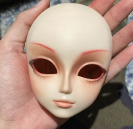
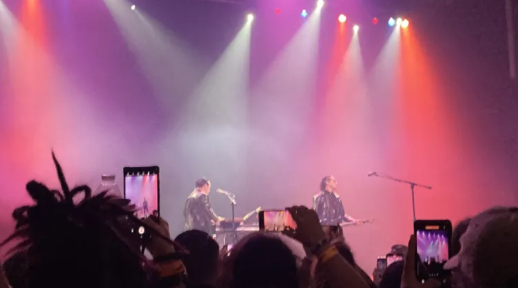
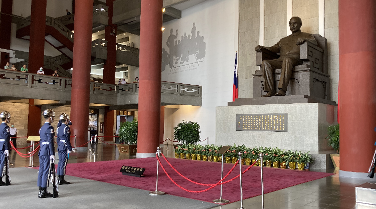

| Go to new logs | Go to bottom | back |
Log 29
Date:20250423
Hi everyone. My quarter at university began again, which you can definitely ascertain by the fact I haven't updated in a month... Rest assured, I am STILL cooking and thinking about Phantom of Opera! And thus... still drawing stuff for it... Just gotta stop being lazy and make the new sketch page orz. Well, anyways... Not a lot has happened except for the fact I'm considering getting my Master's in European Culture, so I'm planning ahead of time to get the coursework and application completed so that I can do it simultaneously with my BA. I've been #slacking on my German again but I'm trying to push myself in the Independent Study and upper-division German course that I'm taking right now... I can't express or explain myself as well as I want to, which is really frustrating, but I'm making small improvements... And each experience makes my vocabulary and speaking slightly better, so I can't be too upset! I just need to take it slow -_-;;.
In other news, I watched almost all of the English Phantom of the Opera movies and adaptations so far. I'm only missing out on the Dario Argento version, 2014 movie, 1991 direct-to-DVD series, and cartoon. I'm planning on making a shrine in which I'll put all my writing about it up, but I gotta say, the 1943 and 1962 adaptations are... just absolute travesties... I can't believe I'm saying this but I'd rather be Ludovico Technique'd into watching the 2004 ALW movie on loop than touch the 1943 and 1962 adaptations with a ten-foot pole. But the worst one has to be the 1962 version by a long shot, especially if you care at all about the novel version of Erik. By contrast, I *LOVE* the 1990s miniseries with Charles Dance! Same with the 1991 "Phantom" musical by Maury Yeston and Arthur Kopit, in which both use the script that was being developed by Kopit in the 80s. Even though they're both based on the same source material, I vastly prefer the characterization and minute changes the miniseries makes over the musical; it is strangely more believable and has less holes than the musical despite the musical coming out after... Both also have some aspects that are more accurate to Leroux's original novel than ALW's adaptation (which is the one that everyone knows). Despite all of it's flaws, I can't help but be completely enamored by this adaptation hahahaha, it's definitely because I'm an Erik x Christine fan for life, so I'll overlook any issues it has. I'm also hoping to do some kinda long-form writing on it... Maybe on some of the novel imagery or Freudian undertones it has... Or how Goethe's Faust relates to it intertextually... I dunno! We'll see. In other musical related news, I watched Les Miserables again and the Jekyll and Hyde musical. Unfortunately, for Jekyll and Hyde, it was the version with David Hasselhoff which wasn't horrible, but I feel as if he is unsuited for the role... After watching this version my only conclusion was that I didn't like it very much, but upon listen to the cast recording with Anthony Warlow, I realize that the music is actually quite good. I'm not sure what happened in the pro-shot... I'm going to have to take the time to watch the versions with Robert Cuccioli properly, since they are well regarded.
Anyways, picture related, I saw Dir En Grey recently! I'll keep it short but basically... It was breathtakingly amazing! Everything I could ever ask for and more. I usually have bad eyesight and can't see very far, but strangely my eyesight was absolutely fine that night. The lighting definitely helped--Kyo was illuminated for everyone to see for the entire duration :3 Perfect! I've never heard a crowd cheer so loud haha. The only thing that sucked was that I was standing behind someone who was recording for all 2 hours, and were raising their hands so high it literally just blocked my view completely, so I had to stand on my toes for basically an hour straight... And when they weren't recording, they were on Instagram watching the videos they took or looking at their camera roll... I'm not one to judge how people enjoy their concerts and videos/pictures don't bother me, but when all 2 hours of it is spent recording...? What's the point of even coming? At least lean all the way into it--bring the professional equipment, get VIP, shove your way to the front--go the whole nine yards, especially if archival footage is your goal (well, ignoring the fact the venue records the entire show as well for VIP). Other than that... WOW! It felt way too short!
Log 28
Date:20250312
Hi everyone. This isn't really an update of sorts since nothing has really happened, but I'm writing this log because I MUST talk about the Chinese cast recording of Phantom of the Opera which I have been so excited about! First of all... It actually released 3 MONTHS AGO AND I DIDN'T KNOW! To spread my Ayunga propaganda, everyone should watch his performances, (albeit bootlegged quality) then you'll see why I love him so much! You can compare how different his performance is to He Liangchen, Liu Lingfei, and Ma Jia's too, who were his friends on the TV show Super-Vocal~ All great performers too, that depict the Phantom in their own way! I also recommend watching Super-Vocal if you want to see sing Ayunga sing against Zheng Yunlong! Squeeeeeee~ But I digress... You can listen to it here. Do note... You need a Chinese NetEase account or a Chinese VPN (I find that Transocks works quite well)... (3 hours later update) Actually, I just managed to download it, sooooooooo... If you want it lmk! I highly doubt anyone is gonna go through the effort to do that, but in case there are any avid POTO fans that wanna check out every international version of it, by all means, PLEASEEEEEE listen to it and let me know what you think! I am so happy I can finally hear Ayunga's noble rendition in non-bootleg quality! (Though I still have my problems with this recording, you will see...).
Hmmm. Well, I will write a little bit of my thoughts on the cast recording now. I am not a music reviewer and I'm just an amateur, but I will try to my utmost ability to give a fair critique. My one glaring issue regarding the Chinese cast recording is the mixing and the audio quality, which is most exemplified in the titular track(!!!). You can hear the compression and peaking of noise when Pan Hangwei hits Christine's high notes + also very audible in the brass section and organ, which is an absolute shame, as the other international mixes of POTO do not suffer from this problem... I also feel that Liu Lingfei's voice is mixed too low in comparison to Yang Chenxiuyi's and is easily overpowered by the instrumentals. Something else I do not like is that similar to the Korean and German versions, the ending transition between "The Mirror" into "Phantom of the Opera," and "Phantom of the Opera" into "Music of the Night" is completely omitted, which are easily the best and most overlooked parts of the Phantom performance in my opinion, especially because they allow a seamless flow into these tracks. It is especially worse in the Chinese version, however, because of the strange addition of a fade-in transition in the beginning of "Phantom of the Opera..." Very jarring and interrupting to the listening experience IMO, at least the German and Korean versions do not have that! And lastly, I really do not like how the instruments and voices are panned in the Chinese version, especially in comparison to the Japanese recording which I personally think has my favorite mixing of all the international versions. If it is objectively mixed well: I have no idea, but as a casual listener, I have a lot of praise for the 1988 Japanese version because of how accurately it tries to represent the positions of the actors and the instruments in regards to a live-venue, and I think it perfectly utilizes panning, reverb, and echo to accomplish this effect. Obviously, all versions utilize orchestra panning, but I find that the Japanese version is the only version that tries to span the entirety of 9 o'clock to 3 o'clock, as many of them tend to stay within 10 o'clock to 11 o'clock, and most especially the Chinese version. In comparison to the Japanese version where I can envision exactly where Raoul, Christine, and the Phantom are on the stage, the Chinese version feels as if everyone is lined up directly in front of me with little usage of reverb to account for distance to the stage the audience is from the actors. The overwhelming dryness in the Chinese version for me, takes away the powerfulness and authority that Ayunga's Phantom displays live, and the possessed quality of Christine when she is singing at the Phantom's command... It is the echoing quality of the Phantom live that truly makes him, well, phantasmic, and I find that the Chinese version is the only version that has little to no semblance of wetness in its mixing. I am a little disappointed with the mixing because quite honestly, this cast recording does not truly encapsulate the ethereality of Ayunga's voice! Similar to the German version too, the channels are separate during "Primadonna," which TBQH, doesn't bother me extremely badly. However, I will agree with another commenter that separating the channels removes the deliberate clashing of all the voices in which each vy for precedence in the chorus. I also find that the orchestration is, well, safe. Unlike the German/Austrian version, there aren't very noticeable changes to the composition except for a different guitar solo in the title track. Not a bad thing at all, but just something to note. AND THE BIGGEST PROBLEM... The absence of "The Point of No Return!!!!" THE BEST SONG!!! Let me steal the top comment on the album... "线上版没有不归点我要告到中央！！！！！（吗喽嘶吼状）"
However, I am very pleased to be able to hear Yang Chenxiuyi's Christine in high-quality! She is my favorite Christine from the Chinese version~ She really embodies the angelic quality of Christine for me! And wow~ Li Chenxi's Raoul is so charming :-D I have only seen Zhao Chaofan's Raoul, so it is awesome to be able to hear the other Raouls! Even with my problems with the mixings, I have no problems with the overall performance of the orchestra and actors~ I love hearing the different ways each Christine, Raoul, and Phantom plays their part :-) And despite my aforementioned gripes, I am still absolutely in love with the Chinese cast recording and I am so happy about POTO's success in China. I really encourage everyone to check it out at least once. The costuming and effort everyone put into the production is just exquisite, and is my favorite out of all the performances I've watched! In the 40 years of POTO's production, I do feel as if Ayunga was able to embody a special, multi-faceted Phantom in the 2 hours the run-time is alloted, which I feel is difficult and unattained in certain other productions I've watched. I have a lot of thoughts about it which I'll write one day... This is just to get some of it out of my system xd. Oh yeah, they also released a PANDA phantom bear... I AM SO JEALOUS!
Log 27
Date:20250203
Hello everyone, it's the first log of 2025. I hope you all had an auspicious Lunar New Years. I've been up to my knees in schoolwork so I am unfortunately back to updating everything every 3 months (aka when my quarters end lol), although I'm only halfway through my current quarter. I have a few drawings (old, but I still like 'em) that I am gonna try to upload, since the main point of this site is to primarily act as a portfolio. I would usually wait a little longer to write a new log, but I absolutely adore these photos we got at Sandy Taboo's pop-up, so I feel as if I must write one NEOW! I once again attended with my friend Xóchi and my other IRLS in which we got this super awesome pic! I'm gonna be so honest, I thought it was gonna have like- split EGL vendors alongside the Punk Market so I was very surprised it was just Sandy's pop-up (admittedly my ass did NOT READ the flyer that long) but it was still awesome--I bought their Taboo Liner there :3 Always wanted to try it but I've never been a makeup person (My friend sitting on the chair in the left did my shironuri makeup that day) but hay, since it was at the pop-up, might as well jump in and try now! Also, my coordinate for that day was...
- Diavolo Hat (Metamorphose)
- Diavolo High Collar Piping Blouse (Metamorphose)
- Cornelius Swallow Tail Wool Jacket (Metamorphose)
- Cornelius Prince Pants (Metamorphose)
- Wood-sole Boots (Beauty:Beast)
XD lots of Meta... Then, we went to get KBBQ and omfg, after not eating the entire day it was absolutely beautiful... Also, it was $21 per person which is way better than $30+ per person at places like Wang Cho and Gen Dx I don't know what's been up with me these days, but I don't notice that I'm hungry until I start eating... Then I was like DAMN, I am actually hungry as hell... After that we went to R1 and took some photos and hit every rhythm game xDDD They were doing bag checks at the escalator and security saw all my Kyo and Iori plushies and doujins... #awkward. One thing that really sucked--is that the fighting games can't be played with local versus mode!!! You can only play the campaign... What's the point of that? The whole point is to play against your friends or randoms IRL!!! Otherwise, time passed by so ridiculously fast playing all the rhythm games LOL. We got there at around 9:30 or so and bam, it was 11:50! 2 hours totally did NOT pass by.
Hard to believe that it's been 6 years for me of getting into J-fashion and 3 years of wearing ouji/EGA! Hoping to build my closet even more~ Well anyways, as for life itself these days, quite honestly it's a little difficult. I like to keep my logs measurably optimistic and light-hearted, but if I'm being truthful, I don't entirely feel that way :'-O. I am thinking of making a subcategory for my Blog in which I'll post more long-form stuff--writing I'll actually put a lot of thought and revision into--and I want to write something a little more serious for once (which will also be related to things like gender, presentation, relation to my art, etc.). I want to try to keep it relatively positive there as well, but no promises ^^; As a result of this odd and perhaps seasonal despondency... I've been running back to my comfort albums from middle-highschool. It's my first time listening to boa in 8 years... "The Race of One Thousand Camels" was on loop for me all of middle school after I had watched Lain. Even though it's been so long, every lyric and melody came back to me like it was still yesterday! Honestly, it feels like that experience regarding boa and Lain is a rite of passage for any adolescent :'-). Lots of Slipknot too. I don't like what they've become, but S/T especially holds a crazy amount of importance in my heart. They (and quite obviously) were pretty big inspirations for my favorite OC Sid's first design. Also been listening to CAPSULE's "Fruits Clipper" album again, which I funnily found out about from a .swf called "Dancing Green Peasants" around 2012 or so. I am quite happy to see them getting recognition again.
Hopefully I can get all the pages I am planning up at a certain point... As always, I am looking forward to all of your updates.
Log 26
Date:20241231
Hi hi, it's the end of the quarter and I finally have some time to myself... In the beginning of the month I made an excursion to the second Ursa Major event held by Bay Area Kei with my awesome friend Xóchi! How exciting~ It was my first time at an event like this. Although I frequently wear J-punk and EGA, I'm actually not part of any particular community, so it was really cool to see so many lolitas and aristocrats in one place! There was also a nifty doll corner where you could make a nametag for any plushies, dolls, or BJDs you brought as if they were also an attendee of the event! I brought my AZONE Prussia doll with me, and Xóchi brought their vintage bisque doll :D.
It was my first time going to SF too, so we spent time walking around Japantown and going to the malls. I gotta say, the matcha was pretty good and priced pretty decently! I'm used to paying like 4-6 dollars for a matcha latte and sometimes the cup sizes are so damn small... But this time the cup was actually like, huge. Then my ass went back into the other side of the mall and bought another matcha latte and Hokkaido custard bun from a different store. I #love desserts. Highly recommend the mall next to Kabuki Hotel... Also, we tried going to Baby, the Stars Shine Bright but the reservations were full for the entire weekend X.X. So, we ended up walking to Angelic Pretty and looking instead. It was so cute and the employees were so nice! Unfortunately didn't buy anything though lol, I thought the mini-hat was pretty cute but it was $100 so I passed. After all, the swap meet was tomorrow! The line wrapped allllll the way down the hall into the Osaka room and curled into a snake tail... Despite that, everyone was able to get into the venue. It was shocking seeing so many lolitas basically run into the swap meet room LOL. I skipped out on any sweet looking tables and just searched around the gothic ones. I was able to get Alice and the Pirates' Little Tracy Vest, a Maxicimam cat-ear hat, and an Atelier Pierrot sample sale jabot for under $100... Was definitely surprised by the lack of Peace Now and Black Peace Now - I suppose it's because the event is largely lolita/EGA rather than v-kei punk but lololol, definitely would insta-buy any BPN/PN tie that came my way. Surprisingly, we both left with money left over HAHAHA. Was absolutely expecting to go flat broke after but it didn't happen... Wonderful event with so many kind people, I definitely hope I can go again! I highly recommend anyone into J-fashion to go ^.^ Extra fun points if you got a friend you can match coords with xD
We also took this picture after going to the Tsunscoops x Neopets collab O.O I don't frequent a lot of ice cream places so this was my first time getting ice cream in a long time. I got their sea salt flavor and it was so effing good... Not too sweet or not too salty :3. No good at describing food, but I've never had ice cream before that had that "elasticity" when scooping into it. This is unrelated, but I also went back to Yogurtland for the first time in like 10 years because of a crazy froyo craving. I only ever get the plain tart and it's still as good as it is in the past, but wtf! Those prices jacked all the way up! $19.42 for 2 cups -.- Okeyyy.
As for other life stuff... I guess I will continue with my usual tradition of writing about music. Some stuff I recommend and have been listening to these days:
- odaxelagnia - Lady Gabba
- Annoying Ringtone - Ravedrops
- Tokio Hotel - Der letzte Tag
- damon r. - Tricked Out
- Hihelga - Throtte Grind
- Kidorikko - Konokono Koneko (Thank you Akiba for the recommendation!)
Been listening to more speedcore and electronic these days instead of neofolk. If you've got any recommendations for me, do let me know. I'd be happy to check them out. Also, thank you for 60k views and 30 followers :D I used to update this site to no one in 2022 HAHA so I'm glad for everyone that views and checks it out, I appreciate you for sticking with me. I look forward to all of your updates as well. I hope everyone had a happy holidays ^.^
Log 25
Date:20241129
I wasn't planning on writing a log so early (I say as a month hasn't passed) but it's 5 AM now and I'm feeling a particularly intense feeling of nostalgia and yearning for the past right now... Brought upon by replaying and beating Digital Devil Saga for the first time in almost 9 years. Persona and SMT are series I have long and very fond relationships with, in terms of the people I've met and the memories I've made with them over the span of 10 years. And my favorite game of all the installments has been and always will be Digital Devil Saga. I hadn't played it since the first time I finished it, but always regarded it in the back of my mind as something I look to warmly when I want to recall the past. Going back through my drive and finding all the fanart I made of it when I was still in elementary school, and how creating DDS fanart allowed me to interact with some of my greatest artistic idols as a child because of our mutual love of the series, seized me with a strangely profound feeling of melancholy. One of my biggest regrets from when I deactivated all my art accounts and withdrew from the online sphere in 2019 is that I lost contact with almost all of my friends and influences that I met from this community back when it was much more tight-knit, and I'll never get to contact them again. This is in part because most of these people too, have deactivated or disappeared from SNS, and also in part that it's been so long since I've disappeared that I'm sure that hardly anyone remembers who I was anymore. When I play DDS, listen to the OST, or even just look at the art, I am inundated by feelings of regret, wistfulness, and sentimentality about the past, yet my heart is also touched in such a way that I get moved to tears. I also wonder sometimes, if some people remember me the same way I remember them? I wish I could be more eloquent with my feelings because I cannot describe accurately at all what kind of attachment I have to these games and the memories I made through them. It's a long shot, but if anyone recalls when my alias was Hito and I used the username "hitoshuura" and "kuroishinji," and even "reikoakanezawa," just know that I have never stopped thinking about you and that I miss you dearly! I hope that one day I'll meet you all again!

It's incredible how fast time passes. In my mind, I'm still 11 getting into fights as an SMT-elitist and turning up my nose at P3-P4 fans (while still adoring those games), but you mean to tell me 10 years have already elapsed? I'm not old by any means at all, but the fact I'm now the same age as the people I looked up to... It's a surreal feeling. I'm thinking about making a "Vault" page where I'll host all my old art because I think it will be fun for me to show all the different kinds of changes and "eras" my style has gone through, and also to show how beloved the SMT/Persona series was for me through the sheer volume of work I made for it. Aside from Castlevania and Touhou, SMT/Persona is probably the only series I spent YEARS with, in contrast with the month-long fluctuating fixations I experience nowadays. Throughout all of this time, "River of Samsara" still plays in my head to help me relax when I get nervous, and the themes of "Sahasrara" and "Muladhara" instantly transport me back to the simplest times of my life. As a matter of fact, I used to use this funny .swf file to loop the "Sahasrara" theme back around 2012~2013, before I had even played the games! (You can imagine my excitement when I first found out it was from DDS!). Well, anyways, this log seems to be an interesting deviation from what I usually talk about... I'm not keen on talking about any particular feelings in my logs, but at least for me, I view nostalgia as a positive thing that I can never seem to escape influence from. As a matter of fact, it seems to be one of my greatest driving forces. After all, the same thing happened with Phantom of the Opera just a few months ago! It seems that when I revisit things I used to like in the past, my devotion towards them increases tenfold. I guess because I was so young, there was nothing to be nostalgic about. But now that I'm a little older, lots of things have changed, and I can look back to these things for comfort. It feels silly because I'm still really young, and I feel like I'm stating the obvious. Like duh, the past will always be viewed with rose-tinted glasses. But even despite acknowledging this, I really can't shake this feeling of pure, unadulterated fondness when I think about Digital Devil Saga, and my life when I was playing these games.
Log 24
Date:20241022
Hi, another 4 months have elapsed so I'm back again to make sure it doesn't seem like I completely gave up on my site LOL. Basically, what happened to me in the past few months was I randomly became obsessed with Phantom of the Opera after watching the Chinese production with Ayunga as the principal actor for the Phantom. I've always loved it since around 2017 or so when I was in my gothic-vampire-romanticism era. I relistened to it every now and then, but I watched the musical a few months ago and now I've just gone down the rabbithole of watching all of the different productions when I have time... As of writing this, it's Ayunga's birthday in China today~ Happy birthday to China's King of Musicals. I really appreciate him and Zheng Yunlong among all of China's other musical actors for putting in the effort to popularize it since it's still a niche space there right now... The Chinese production of Phantom of the Opera is wonderful!!! In other musical-related news, I also saw Hamilton for the first time 3 weeks ago and I mayyy go and see the Wicked musical in January! I'm looking forward to it! I've always been a little embarrassed about liking musicals but as of 4 months ago I was like, "Why do I even feel embarrassed?" So now I'm trying to lean into it since I never really allowed myself to like them to the extent that I wanted to... There's a lot on my watchlist now to catch up on... so if anyone has any musical recommendations, let me know!
As for going to see Hamilton, I was very impressed by the production, staging, costumes, and performance! I've actually never listened/seen it so I went in completely blind... And I totally understand why it has the reputation that it does. Really great work by everyone involved... I was trying so hard not to cry during the end of Act 2 cuz I didn't wanna get all sniffy X.X I was way in the back and I'm blinder than a bat (especially in the dark) so I couldn't ascertain the facial expressions, which IMO, is one of the greatest factors for something to be emotionally moving for me in musicals... So the fact that I was tearing up without being able to see their faces is impressive. Although, it's not hard for music, movies, musicals etc. to make me cry LOL so maybe it doesn't mean much. I was also pretty surprised 'cuz the performance started on the dot, while I'm so used to performances at concerts and stuff taking like, an hour or so past the set time to actually play.
The venue at the Hollywood Pantages sure is beautiful, huh! I was shocked when I walked in~~
In other news, I also went to see Bladee 2 weeks ago, and then it was my birthday on the 20th... To be honest though, I was/am more excited about Ayunga's birthday than my own. Bladee was really fun but wow... Rough crowd which was honestly, completely unsurprising. I was standing in the back because I had been up for 24 hours at that point and didn't really want to get stressed out in the crowd, but apparently people would not budge AT ALL. So if you needed to get out to use the restroom or go up to find your friends you were basically screwed unless you said F it and just mean-mugged your way in with enough force. Seemed like an ordeal where you'd have to have a STR requirement in a game or something X.X
Other than that, just been listening to Phantom of the Opera like a madman and revisiting electro-industrial, death industrial, and ambient noise. Favorite stuff these days are: Snow is Falling in the Ruins of Stalingrad by Alberich, Let's Make A Slave by Prurient, and 阿雲嘎 秋風裡的母親 by Ayunga. I've also been listening to Psyclon Nine again. Nero will always be my style icon.
The gallery is like, SUPER outdated and needs to be updated with all the new drawings I've done... I've been pretty busy so updating isn't something I can do often, but I'm gonna try to include all the recent things I've been drawing since the intention of this site was to host my art (unfortunately failing hard at it). I am also thinking about redoing the site because it is laid out incredibly unintuitively to be honest. Only thing is, I suck at coding but I'm stubborn and don't like using layouts, so I either have to improve or just use a pre-made layout. Or do neither... That's always the third option...
Log 23
Date:20240629
Hello ^_^. Once again, I seem to have disappeared for a quarter of the year. The past 4 months have been a little busy for me, and I had a little of a struggle concerning my courses which luckily got resolved... Well, I guess I'll continue with my usual music updates, and then write a few sentences about the shows I went to, school, then some of my other life updates... Which most excitedly will be about my first attempt at a doll faceup for a custom Shu Itsuki doll I tried making for myself!
Ah, well obviously most recently I've been really obsessed with the music by Valkyrie from the gacha game Ensemble Stars HAHAHA. I have been aware of its existence since 2017 but I never got into it because I had mutuals that would constantly get in fights online so I was very wary of the fanbase... But my longtime oomfies got me into it and I immediately saw Shu Itsuki and latched onto him... Their song "魅惑劇 (Miwaku Geki)" is my personal favorite, and I'm very enthused by the fact it's composed by ALI PROJECT! I also think that their song "D'arc" from the stage play "Memory of Marionette" is amazing!!! Unfortunately most videos of the footage is blocked but here's this lyric video instead. If you're a ValkyrieP and haven't seen it, I highly recommend checking it out ^_^ It's a performance that is definitely up to par with Shu's standards~ Although it's very close to the script of the original Marionette story, it also adds some additional scenes and Shu soliloquys that I think contribute to his character in a positive way - I loved everything about it ^.^^^^.
I also enjoyed Minenwerfer's "Der Blutharsch", Parnassus's "In Doloriam Gloria" and Sorhin's "To Give Death". I have been trying to get back into symphonic/black metal after not listening since middle school and early highschool, mostly spurred from my love for the band Puissance and their proximity to the black metal scene because of Fredrik Söderlund's BM projects Parnassus and Octinomos. I also recommend the folk bands IANVA(!!!), Garmarna, Hedningarna, and Folque.
Okie, now I'm gonna talk about my experience with doll faceups for the first time! I've always loved Pullip's Taeyang line of dolls, and they offer "Make-It-Own" kits where it only includes a body and bare face, but everything else must be done by yourself. I love Shu and his passion for dolls, so I thought it would be a perfect opportunity for me to try my hand and customizing a doll version of him for myself since I've always had an interest but never actually jumped into trying it. I was surprised because I thought with a series as popular as Ensemble Stars, maybe he'd have a few figures or something but there wasn't!!!! So I decided to take things into my own hands...
What I used for supplies were the cheapest watercolor pencils and pastels I could find, and my OLD, SUPER FRAYED BRUSHES from middle school HAHA. I was struggling in the beginning because it was looking... SO BAD. I think I didn't spray enough matte topcoat because the adhesion of the pigment of the pastels in the first layer was extremely poor and the pencil was very streaky. I pushed through by just layering brown and red colored pencil for the eyelids until I was satisfied, then sprayed another round of topcoat. Then it clicked and I went "Ohhhhhhhh." You gotta either put a real good first spray of topcoat or just layer the pigments over thin layers of topcoat if you're impatient like me, then it'll look smoother and more pigmented over time. It really was a trust in the process kinda thing... I've seen other people also lightly remove the factory finish by using fine grit sandpaper which also works over spraying a first layer of topcoat. The wig was really difficult - I opted to also purchase the cheapest wig I could find online because all of them have a bowlcut kinda hairstyle anyways... So I was like "Augh, I'll just get a cheap one and style it myself." The wefts of the bangs were very low and didn't have much hair on it, which made cutting them shorter for Shu's "baby bangs" hair style really troublesome for me. In certain positions you can see the wig netting, but I've hidden it to the best of my ability by layering some other hair strands and making a mixture of water and glue to act as gel to keep it in position. The eyechips were temporarily painted with blue gouache but I wanted to be fancy, so I ordered some customized glitter eyechips to replace them later. Anyways... I was hunched over for 15 hours total and the pain and fatigue of being human didn't hit me until I was done ...
I probably have to fix his sash because the pleather has become so brittle it's fallen off, hence the weird orange spotting... But anyways, I decided to have him wear a French Aristocrat outfit because it fits with his Ouiaboo character. Overall, I had a lot of fun with this project and I definitely want to make a Mika doll to accompany him :DDDD My goal is to wear a pretty Ouji outfit and do a photoshoot with him~~~ I also got a Shu Nui plushie which will join him...
Well, anyways, I really love Shu because I feel like I can relate to him the most out of all the other characters~~~ Except for the fact I'm not a world-class genius like him X.X I wrote some big spiel about why I really like him but I deleted it cuz it was unnecessarily personal LOL. But yeah~~~ Shu is so cute. I don't really like any of the other units except for Akatsuki. I'm currently in it JUST for Valkyrie and Shu. Mika is also very cute, and on paper it seems like I'd be a MikaP over a ShuP since he's lowkey yandere and loves eroguro but I don't think I can quite relate to the things he went through...
As for recent concerts, I went to see Snow Strippers for a second time and I also went to the SUBCULTURE PRIDE rave among other things... My dear friend Lolz has written a little bit about it on their blog and also includes a really cool group photo of us taken by the awesome Maxim: Entry 3 has a bit about it. Please do check out the site, especially if you are interested in Elegant Gothic Lolita and J-fashion! Snow Strippers was an amazing experience, although I miss the smaller venue of the show from last year. Even in my drunken delirium, I know Phreshboyswag DEFINITELY threw up on the stage =_= but Elusin was absolutely breathtaking!!! (Shoutouts to the person next to me who also updated me on the Sematary lore...). Admittedly, SUBCULTURE PRIDE in comparison was a little underwhelming and I am not sure if I would attend a rave again other than an industrial set - it made me realize that rave stuff is not really my kinda scene, but I don't regret having it as an experience!
As for university, I finally declared my double major of European Studies and German Studies. I had a lot of fun this past quarter with my Germany and Asia, Comparative Literature, and Russian Revolutionary Literature classes. I also took an Origin of Language class and it was kinda whatever in comparison LOL but whatever gets those Major requirements fulfilled... Shoutouts to my German professor because he saved me from needing to spend a 5th year... I was supposed to take the German Intensive Language courses this summer and even got the scholarship for it, BUT THEN IT GOT CANCELLED CUZ ONLY 6 PEOPLE ENROLLED. So he let me and 2 other students basically be guinea pigs for an online program he set up. Otherwise, I'm quite happy because my courses were really intriguing and I was able to end with a 4.0 GPA ^.^^^^ !
Well, that's it for now :3c Hopefully I can update a little more but my motivation goes up and down frequently Dx
Log 22
Date: 20240218
Hello. Wow... It's been around 5 months since the last log. Happy Halloween, Happy Thanksgiving, Merry Christmas, and Happy New Years. Just wanted to put out an update just to say I'm alive xd. All I've been listening to these days are German folk, neofolk, some choral stuff, revisiting some bands I used to like in high school, and a tad bit of Mittelalter (Medieval). Recent favorite songs are: "Das Lieben bringt groß Freud," "Wir Rufen Deine Wölfe" by Werkraum, and "Kriegsgötter" by ROME. My friend Ky showed me this song by Solas called "The Wind That Shakes the Barley" about the Irish Rebellion which I also really like. Also, check out this cool Serbian song "Zbog tebe" by the group Legende I found on accident looking for a Norwegian folk band of the same name. Probably one of my favorites I discovered so far.
I started to get drawn to German lyrics and songs starting my Freshman year of highschool after discovering Einstürzende Neubauten. I went all crazy and tried learning German at that time. I ended up coming back full circle relistening to Haus der Lüge, Halber Mensch, Kollaps, etc. and trying to learn German again. I don't listen to them as much as I did back then, but they're a very influential and impactful band in my life. Speaking of German stuff, I started to collect East German (Communist German Democratic Republic) uniforms. So far I have my Wachregiment Feliks Dzierżyński uniform pretty much done. It's missing the grained leather officer boots and I don't have the correct blouse (I have a Dienstbluse instead of Oberhemd), but I'm not too concerned about it. The rank of the uniform I'm trying to collect is Unteroffizier by the way. I will be honest, I just like the way they look (elegant and well-structured) which is why I wanted to finish a set. I'm not actually trying to join a re-enactment group or something like that.
I've also been listening to their military ensemble consistently since January 2023 (Erich-Weinert Ensemble). My first mention of them is all the way back in Log 15... Can't believe it's been a whole year... I was surprised to find out that the songs "Unterwegs," "Arbeiter von Wien," "Partisan vom Amur," "Lied der unruhevollen," and "Lied vam Vaterland" are covers of the Red Army Choir's "В путь," "Красная Армия всех сильней," "По долинам и по взгорьям," "Песня о тревожной молодости," and "Широка страна моя родная" respectively. I didn't discover that until I actually started listening to Red Army Choir and then it suddenly made sense. Like yeah, why WOULDN'T they cover Soviet songs...
By the way, I mostly only have an interest in uniforms these days because I'm so atrociously reluctant to practice drawing guns that I forced myself to practice by drawing them alongside the real-life armies they were used by, since I'm much more willing to learn and draw clothing and equipment than guns. I've tried to draw a few Russian Civil War uniforms and German uniforms so far, but I'm thinking about moving onto different countries and other historical outfits. I'm thinking about trying to draw Prussian Uhlan uniforms or the Svenska nationella dräkten... It's also helped me figure out some other outfit designs for my character Håkan (which is the new name I'm giving Väst because his original name was given by someone else). I'm not super researched when I draw them so there's probably lots of inaccuracies, but hopefully just doing it consistently over time will help me accumulate a good amount of knowledge on these kinds of things. I will try to add them to my gallery soon.
In terms of real life... First: Had the BEST CONCERT EXPERIENCE EVER AT SNOW STRIPPERS!!!! Got a picture with them and Tati complimented my shirt! Also saw Twin Tribes and was happy to see Riki opening, since I have been listening to her since her first album came out! I am also learning how to drive... Yeah, I'm 19 so it's very late to start learning now, but better late than never!
School... I had a lot of fun taking a Russian Demons class last quarter. My professor was really nice and it was basically a class where we read a lot of Russian short stories, books, poems, etc. that all had used the Devil or demons, and how their role spoke on the state of society at time. So, we read stuff like Vasilisa the Beautiful, The Tale of Savva Grudtsyn, Lermontov's "Demon," Tolstoy's "The Devil," Mikhail Bulgakov's "The Master and Margarita," among others. It was also sort of like history class fused together too, so that we knew the context of the stories. I feel like a story like "The Master and Margarita" would've been confusing or unremarkable to me without knowing the context of Soviet society, literature, and art at the time, but knowing about all the little tidbits made it a really entertaining and interesting read. I hear there's a movie coming out for it (or is it already out?) so I want to watch it eventually. My professor also recommend me to read stuff by Viktor Pelevin. She's so funny, she was like "Yeah, I don't know, it's just like-A really sexy story" and I was like OK girl, I didn't know you were serious like that. She is having another course next quarter so obviously I am going to try to enroll in it! I also took a European Modernity class which was cool, though it mostly focused on German literature and works since the professor worked in the German studies department. It was stressful and quite frankly, boring at times, but in retrospect the actual content itself was pretty enlightening. I actually have to declare my major by the end of this quarter, and I'm thinking about declaring European Studies or German Studies... Well, actually I'm not thinking about it. I'm gonna do it because I don't have a choice T_T. The reason why I've been listening to so much German music these days is because I'm trying to get better at pronunciation, since I'm self-teaching myself right now. But hopefully I'll improve faster after taking the language courses at my university since they're required.
But yeah. That's about it. Not sure if I can say I'll update frequently BUT I do check Neocities once a week or so. Always like seeing everyone's updates :). Also, random little sidenote: 2 years of me maintaining the site!? Time goes by rather fast, I still haven't changed my layout even once xD!
Log 21
Date: 20230918
Hello :) It's been almost 2 months since I posted a log... Firstly, even though it's not much, I would like to thank everyone (albeit belatedly X_X) who followed my profile, commented, or even just viewed the site! Since I am very shy online, I had basically been updating to a void the past year so I was surprised and happy to meet other artists and people who have similar interests to mine :D !!! I hope I can be friends with you all ^_^ I also want to say thank you to everyone who viewed or commented about my art. I almost dropped drawing multiple times in the past due to struggles with confidence for years, so it really means a lot to me that people like it :D
Anyway, I stopped updating for a while because of 1. STARCRAFT!!! and 2. I went on a trip to Taiwan and Japan! I didn't really think Starcraft would be my kind of game because watching it seemed so confusing and I thought that it wouldn't be interesting, but I couldn't have been more wrong. The only reason why I played it was because in League of Legends (sorry guys... I am tragically a LoL player...) I like to play Malzahar and he has these little purple minions he can summon that look like Zergs, so every time I play him I'm like "Don't worry guys, I'm playing Malzahar. I'm basically playing Starcraft 2." One of my friends is a huge Starcraft fan and was like "Wait, do you actually play Starcraft?" to which I had to sadly say I'm just a poser and that I don't actually play X_X So then I was like, "Fuggit, I'mma try it cuz it's free anyways." And then my Starcraft fixation began... I had fun with games like Front Mission, Fire Emblem, and Devil Survivor, but I think Starcraft was more compelling and tense to me because it was all in real-time and not turn-based. I'm so used to sitting around taking my sweet ass time planning what to do next but in Starcraft I had to maximize my efficiency with minerals, build my base without leaving resources unspent, and build my army all at the same time which made me feel way more immersed (and stressed XD). Gotta get my macro game up!!! I spent all my free time playing the campaigns and they're surprisingly pretty long, or maybe I'm just dumb and not good at strategizing XD cuz it took me around a week to finish all of the main story campaigns and like two days to finish the Brood Wars campaign. I have to say, they aren't lying when they say it's one of the best games of all time. OST, gameplay, voice acting, story, and cutscenes were perfect in my eyes!!! In a way, I kind of prefer the gameplay of Starcraft 1 over Starcraft 2, at least for the campaign missions. I can't say anything about online competitive because I've never played it but personally, it kind of feels like Starcraft 2 in PvE is a much more macro-heavy game...? I feel like the pace of SC2 is significantly faster paced than SC1 macro-wise, especially because of the QOL updates that the game provides like being able to queue actions and select hundreds of units instead of just 12. It honestly feels like if I mess up macro in SC2, especially on Brutal difficulties for Co-op Commanders, the game is just fucking over (unless I get carried by my awesome duo!!! Shoutouts to da Towi :3). I don't follow buildpaths though because I don't care... So that might be my problem... Also, I'm a Protoss player and like... WHY THE FUCK DO THEY HAVE SO MANY STRUCTURES??? I have like 4 hotkeys just dedicated to structures and upgrades. Like, why do I need a Forge, Death Council, Robotics Facility, Engineering Bay, Ascendant Archives, etc., then I gotta remember when the announcer goes "UPGRADE--COMPLETE" to queue another upgrade every time... And then I gotta constantly be making units and constantly be getting unit upgrades... I just wanna blow enemies up as Alarak!!! This is why even though I'm dedicated to the Protoss grind, I think I'm a Zerg player at heart. I. LOVE. HYDRALISKS!!! They were my absolute favorite units in Starcraft 1. I would click on them repeatedly to hear their noises XD So cool. Max-upgraded Zerglings are also super fun. Maybe they can't attack air, but it doesn't matter when I have 200 SUPPLY WORTH OF MY CRACKLINGS SURROUNDING YOUR BASE!!! I'm in your base killing your dudes :p
.png)
ALL SHALL FALL BEFORE THE SWARM!!!!!!!
In terms of SC2 Zerg, I have a lot of fun playing as Stukov and Dehaka. I think that the Primal Rage comes out a little too much when I play Dehaka though. All common sense goes out the window as I jump on enemies and try to eat them even if it's a bad fight to pick, but sometimes you just NEED to unleash the beast. Stukov is awesome too because I can just summon hundreds of zombies to run around the map and do my bidding >:) As for playing Terran, I'm always like "Meh, not my favorite" but once I start playing them I'm like "Wait, it's actually pretty fun..." No matter what, I always like to just build standard infantry and am not really a huge fan of building mechanical units even though they're so good lol. So I mostly just go Marines and Medics and then start inching my way with Siege Tanks. Either that or I just rush Battlecruisers and blow everything up. There's nothing you can't do with 12+ Battlecruisers or 12+ Carriers in SC1. I don't play Terran at all though in SC2 except for when you have to in the Campaign, cuz I don't really find any of the Terran commanders interesting :(. Anyways, I can't believe I'm this late to the Starcraft train but it definitely gets the Freaker Seal of Approval.
.png)
Shifen Waterfall
Starcraft aside, my trip to Taiwan and Japan was really fun :D Probably won't write that much about it cuz I don't really feel like it LOL but basically ran around and did a lot of sightseeing + eating in Taiwan, then did a lot of shopping in Japan. I ran around Ximending multiple times, went to Jiufen Old Street, watched the guards change at the Sun Yat-Sen Memorial Hall, hiked up Xiangshan Peak, and saw the Queen's Head at Yehliu Geopark. I was able to get a picture with Hisacy, the designer of Hypercore, and a picture with the designer at Yellow House who did costumes for X Japan, Luna-Sea, Kuroyume, etc. I also was able to pick up a really sweet button-up from Richard's / Mari's Rock and met the designer that day too. He gave me a free pair of arm warmers which was pretty awesome :p In Osaka, a lot of the thrift stores were American-themed. Like, almost all of them were 90's American vintage themed. While I was checking one out a clerk with bleached brows poked my face because I don't have any eyebrows which was surprising and like, really funny for me. She was like "Eh??? Very punk." I ended up just buying a JNCO hat for like $10 because she talked to me a lot so I didn't wanna leave without buying anything lol. Something that was surprising for me was that in China, Hong Kong, and Taiwan, the stores are usually open pretty late, but in Japan they close very early. Like 7:00 or 8:00, so you have to wake up really early if you want to do a lot in a day. I can't lie though, it's great to be home...
Log 20
Date: 20230729
.png)
Hai gaiz :P I actually finished Legacy of Kain: Defiance a while ago but got kinda lazy so I didn't write about it immediately, but I'm forcing myself to update semi-consistently haha. The game is super old so like in the previous log, I'm not gonna talk about it too much since lots of people have already put in their two-cents, but I will write a little bit about my thoughts as well as other things going on in my life. (Btw, the picture of the Raziel statue at E3 above is from PSM issue 024 scanned by MigJimz!
Anyways, I went to see The Garden at The Observatory Festival Grounds last week. I did face makeup for the first time and it was really fun, but also difficult. I respect makeup artists waaay more now... Even though I'm an artist, getting straight lines with eyeliner felt impossible! I also used setting powder after putting on the white foundation and then even used like 3 layers of setting spray but it pretty much immediately came off if something touched my face... Maybe I'm doing it wrong? I have no idea how to do makeup... I tried so hard not to collide with anyone or touch my face because I didn't want it to wipe off throughout the night which luckily worked out quite well. It didn't look much different after several hours of being pushed around by sweaty people in the crowd. Maybe I'll upload a picture here later but I feel kind of lazy to do it (and shy). Unfortunately, I missed seeing 45 Grave and Alice Glass (I heard her playing in the parking lot...) but The Adicts, JPEGMAFIA, and The Garden all performed great! :) Even though I've seen The Garden so many times and kind of fell out of their music, I will say that they consistently perform live very well and so I enjoy them each time. They played a lot of my favorite songs and I was pretty happy that they played Kiss My Super Bowl Ring since I haven't heard it in a bit. I cannot really say I was a huge fan of The Adicts because I've never been a big fan of UK punk in general, but I will say they do have an enjoyable, jovial energy and I do think that their Clockwork Orange imagery is quite charming. I don't know if I would enjoy JPEGMAFIA but I think I can come around to his music if I explore his discography and put in the effort (which admittedly, don't really feel like doing right now). I thought he was a funny and likeable person though, and a highlight from that night is when he sang Carly Rae Jepson's Call Me Maybe but in full autotune.
In other live-music news, Skinny Puppy finally announced their West Coast tour so I snagged a ticket cuz it's their so-called final tour... So obviously I have to go. I hope that they do tour in the future though and that they're just lying about this... I was hoping that I would be able to see FLA and the Puppy together on the same stage like they did uh... Nearly a DECADE AGO! But I guess that was never in the cards. I hope that they play a lot of material from their 80s-90s discography (basically, everything they made with Dwayne Goettel.). I can't say I'm particularly a fan of anything they made after his death except for Pro-Test. Sorry, but that song is way too good to dislike. HIT ME IN THE STREETS!
Okay, well I guess I'm gonna write about my Legacy of Kain: Defiance experience and probably my thoughts about the LOK series as a whole. Luckily, Defiance works straight out of installation and doesn't require any fixes like all of the other games, much to my relief. I think gameplay-wise, it makes a huge improvement over Soul Reaver 1 and 2, implementing different kinds of attacks, special moves, telekinesis, etc. While it is a definite improvement, I still think it suffers from a redundacy that gets boring after awhile that I felt in a similar way to SR2, which didn't help with it's increase of rooms where you are forced into combat and extremely lackluster boss "fights." Hack-and-slash games like DMC are fun and rewarding to me because of incentives like the style-ranking system and a whole slew of different combo options, weapons, style switching, etc. but I feel like Soul Reaver and Defiance lacked that kind of depth in its combat system for me to find it exhilarating. It gets a passable grade I suppose, because it definitely is a step forward from the slog that is SR2's which I'm only okay with because you can run past most of the enemies anyways. Graphically, the game continues in it's beautiful architecture and environmental design and I had a lot of fun seeing Nosgoth between timelines in Kain and Raziel's routes. Speaking of which, I found it awesome to finally be able to play as Kain again! I'm definitely a huge Raziel fan, but I LOVE Kain! VAAAAAAAE VICTIS!!!!!!!!!!!!!! WOE TO THE CONQUERED!!!!! I loved being able to telekinetically suck the blood of all my enemies from 2-feet away again! Personally, I had way more fun playing as Kain because his moveset feels better and his swings are horizontal and easier to catch multiple enemies with. He also doesn't need to switch to spectral realm to go through gates and everything he does is within the living plane, so it's much more straightforward. As for Raziel, I didn't really care too much about the puzzles they made you do in his chapters... They become much more linear and just involve interacting with objects with the right elemental reaver but the temples felt really boring, which sucked because it's pretty much all you do as him... His gliding and movement felt a lot better though, and I was happy you could finally scale walls in the spectral realm... Amy Hennig said in the Aug. 2000 copy of EGM that Raziel can stand on blocks because they maintain a presence in the physical realm but just can't push them because the spectral realm is static, and by that logic, it should apply to walls too. So why the heck was Raziel not able to scale walls in the previous games...? Maybe I'm just being daft though LOL. And I'm just picking at it to be a cunt. Overall, Raziel's chapters were a little annoying and not as fun as Kain's but I think his makes up for it because I did love seeing Vorador and his mansion, Turel, and Janos Audron again. Plus, he's a funny little guy and I liked seeing him sugar-glide around all the massive buildings. He is just a little baby to me... Okay, I know I just talked a whole lot of a shit but I really have to say though, I loved this game. The puzzle design was a little weaker but much less complicated which can be a plus or minus depending on what kind of puzzles you like, but combat was a definite improvement which made it infinitely more interesting to play than SR2. The story and script, on the other hand, was just phenomenal to me. I was really taken by multiple developments in the story, and I loved how the climax between Raziel and Kain's fated clash and destinies develop throughout the story. Oh, and unlike SR2 there's a bunch of silly cheat codes like replacing Kain's reaver with a cardboard tube and cartoon modes that turn Kain and Raziel into little chibis. Their walk animations are super cute but it does make the hitbox a little funky cuz they're so tiny... Anyways, I'm gonna write something spoiler related to the ending, so please do not read ahead if you care...
(Spoiler starts here!)
"The two become one - both Soul Reavers - together - and the Scion of Balance is healed. And I - am not your enemy - not your destroyer - I am, as before, your right hand. Your sword."
I was physically unable to cry during this scene, but I wanted to so badly. Raziel's sacrifice and last words felt like I got shot several times. I found it particularly moving to me because the series sets up Kain to be a megalomaniacal despot that sacrifices Raziel out of petty jealousy, but we get to see throughout that Kain's actions are more than meets the eye and have a deeper meaning behind them and that he was on Raziel's side the whole time even if it meant playing an antagonistic role, and finally Raziel understands that. In SR1, Kain's role is rather passive and he clearly wants Raziel to just hate and pursue him, but it is in SR2 that he begins taking a "mentor" role, pushing Raziel to defy the history that Fate has written for them, encouraging him to unravel more about the past and the history of Nosgoth. By the time Raziel gets into Defiance territory, Kain makes it clear that Raziel is not his enemy, but rather the key to changing the destiny of The Pillars. Meanwhile, throughout the series, Raziel's story begins as a one-dimensional simple revenge story against Kain that quickly convolutes into something more complicated that we get to unravel alongside him, with his desire to kill Kain constantly shifting as he learns more. Initially, it is for his seeming betrayal at the hands of Kain into the Lake of the Dead, which then redirects into his discovery about how Kain profaned his Sarafan Priest body into a vampire's and led Nosgoth's decay by establishing his Vampire empire by refusing the sacrifice. However, when Raziel discovers that the Sarafan were unusually cruel and fanatical vampire hunters and that it was he himself and his brothers that killed Janos Audron — the last true vampire guardian of The Pillars, Raziel abandons his views that the Sarafan were noble and discards his past as a priest, realizing that the Sarafan were not the saviors that he thought they were. After this point, I feel as if Raziel does not truly hate Kain, but his only desire to kill him is based on a misread prophecy and stronger manipulation from other players within Nosgoth that benefit from pitting Raziel against Kain, particularly the Elder God and his servant Moebius, trying to push him into believing he is the Hylden Messiah and that Kain is the Vampire Champion he *must* duel, and that he was fated to slay Kain. This is all to say that because the emphasis of Raziel's relationship being one largely being based on his hatred for Kain and his opposition towards him, it felt incredibly satisfying to see all the loose ends tie up and for Raziel to realize the *true* meaning of the Vampire prophecies — that while he played the role of the Hylden Messiah by resurrecting Janos Audron and allowing the Hylden Lord to possess him, he also maintains the role of the Vampire Champion who purifies the Scion of Balance and allows the pillars to be reclaimed by the vampires. Since he is an individual with free will, he can play both roles of the prophecies and realizes that this source of conflict between the two races exists to keep the Elder God's wheel turning, and that Kain is NOT his enemy nor someone he is prophesized to kill.
In a final act of sacrifice and defiance against what history has written, Raziel's fate comes to a full circle — his soul becomes consumed by the Reaver. Yet, he also frees himself from his cyclical doom with the wraith-blade purifying Kain's soul and allowing him to reclaim his position as Scion of Balance. Finally, Kain's coin lands on the edge, with his cast at destiny leaving him with the final bitter gift of hope from Raziel. I love this line because not only does Raziel's fate come and end at it's predestined loop, but so does his relationship with Kain. He returns to becoming what he was in the beginning — Kain's most trusted and beloved ally, but most importantly, his sword. Literally. And it's awesome. So, I really think this line impacted me because it finally concludes the character arcs of Kain and Raziel. There is a lot more I want to say and I think I could write a lot more about what I feel about Raziel and Kain's character arcs and dynamics with each other, but I'll leave it as this for now. Unfortunately, I don't think I was able to articulate my thoughts as well as I want to but I mean... It's just a log so I don't want to put too much effort in. I just hope you get the gist. Oh, and just one more spoiler thing that is totally unrelated just to say it. I thought Raziel was such a dumb freakin' idiot for actually "killing" Kain. Like, I know he was under the influence of the Hylden after consuming Turel's soul but I was just like, "WTF Raziel? THAT'S MY GOAT!!! YOU CAN'T JUST DO THAT!!!!" I had a strong in my feeling that Kain wasn't really finished cuz I mean, it's called the LEGACY OF KAIN, but I was still sad. Like, NOOOOOOO THE GIRLS ARE FIGHTING!!! Also, their boss fights were so funny. When I was fighting Raziel he kept spamming telekinesis on me so I was like "ERM, WTF, HE'S CHEATING!!!" It was also really weird to hear him laugh mid-fight. Like, he never laughed at all during the whole series. I guess that's what evil Hylden mind control does to you...
(Spoiler ends here!)
Anyways, I'm gonna heavily be repeating myself, but after playing all the main LOK games all I can really say is that they're just... Amazing! (Just ignore Blood Omen 2... It kind of sucks story-wise...) Even though it feels a little lacking in gameplay, it's just coming from my incredibly privileged position as a younger generation player haha. The Legacy of Kain games were and are absolutely revolutionary for their time period and are still great fun. Despite the Soul Reaver series being out of the genre of games I typically enjoy, the story, characters, environments, and script absolutely pulled me in. I seriously can't recommend them enough. They are critically acclaimed for a reason! With Crystal Dynamic's survey recording over 100k votes saying they want a new Kain game, there might just be hope! Until then, definitely try them out if you haven't! OH, AND BTW, ONE LAST THING. WHOEVER COMPLAINS ABOUT THE CAMERA ANGLES IS JUST STUNTING LIKE A LAME. It's really not bad. It's just semi-fixed, but in this way it points out obvious things to you like where you should be going or key points for a puzzle. There's even a free-look mode if you press Start on a Dualshock and you can move the camera up-down-left-right from the fixed point with the right analog stick if you really want to.
Log 19
Date: 20230711
.png)
Hi everyone :D I finished Soul Reaver 2! Gonna write a little bit about what I thought about the game, but probably won't make it as long as my SR1 log because lots of people have already expressed the same thoughts on the game that I have. But first, I'm gonna write a little bit about other stuff like music and what I've been up to in life.
These days, I just listen to the same things over and over again. I was way more into exploring genres and other bands when I was still in highschool but I don't really care that much anymore. So, I've still pretty much only been listening to my 2019 playlist and such, but I also started listening to the Norwegian band "bel canto" and exploring more of Lycia and Muslimgauze's discographies which I had not gone too in-depth into before. So far, I'm a pretty big fan of bel canto, their instrumentals have a sort of dungeon-y sound to them and the vocals are very ethereal and dream-like but she also trills in a fashion similar to Lene Lovich. It kinda reminds me of a Opus III in a way too. I used to not be a fan of female vox simply because I liked harsher music that male vox suited better, but these days I want to relax and listen to things that are easy on the ears so I'm trying to explore more dreampop bands. I recommend their song "Die Geschichte Einer Mutter," "Shimmering Warm and Bright," and "Unicorn" (Yes, it's their most popular songs but it's for good reason. Because they're good...). I also started to listen to Puissance, Karjalan Sissit, Arditi, Dernière Volonté, and other neoclassical bands. So far, Puissance's "Mother of Disease" album is my favorite discovery of these past few months. It is quite literally everything I have ever wanted in an album at this moment. I really recommend their song "The Voice of Chaos" and "Light of a Dead Sun." It is interesting to see their themes of nuclear warfare juxtaposed with classical-inspired compositions and Baroque era aesthetics, with the technological advancement of nukes being anthropomorphized as a God thats power will reduce man to mud. I am really thoroughly enjoying Puissance so far and hope to explore more of their discography soon (I can't seem to stop reading their name in the French pronunciation though...). Other favorite songs from the past week are: "Black Sabbath" by Gaë Bolg,"The Seventh Seal" by Scott Walker, and "ESS" by Karjalan Sissit.
As for real life, I am going to see Portrayal of Guilt in August and see The Garden, 45 Grave, The Adicts, Alice Glass, and JPEGMAFIA in 2 weeks. Portrayal of Guilt's newest album "Devil Music" was an amazing release that totally blew me away this year and last year I missed their tour just because I was being dumb, but this time I want to definitely be there to experience it. As far The Garden show, I actually do not really listen to them that much anymore but I go to every show anyways and have since 2020, and I'm really looking forward to it to see all my friends (Shoutouts to da 0pivm Apostles -w-).
Well, now it's time to write about Soul Reaver 2! Luckily, I seem to have gotten into the series when the PC fix called "SoulFixer" released 3 months ago which fixes a lot of the issues that the Steam and GOG versions of the games have due to their age. So, playing it was quite easy and I never encountered any issues at all (except for one time I crashed during a cutscene and had to redo the puzzle again—but I think that was Discord's fault...). I don't entirely dislike linear progression in games since I tend to not look for secrets, so Soul Reaver 2 being more straightforward was not an issue for me, although I do see how not having side quests can be a downside. I was a really big fan of how they characterized Raziel in 2, he becomes a lot more "impudent" and cheeky, cracking jokes like "I don't have the stomach for it" (literally) or asking if Moebius's faith would falter when he finds out the Elder God is a giant squid, and I also appreciated how expressive his movements are. I thought it was really cute how he keeps one door open with his foot and pushes the other, kicks down the door when it becomes stuck, crosses his arms and looks away in displeasure at the Elder God, grabs his head and shakes it when he gets hit, plays hide and seek with Ariel, etc. All of these actions solidified Raziel as a funny little creature in my head instead of the noble vampire lieutenant and Sarafan warrior he once was. As for the story, I can definitely see why Soul Reaver originally had to get cut into a cliffhanger ending because of how ambitious they were with the project. I'm not gonna say much about the story, but I will definitely say that exploring the hidden histories of Nosgoth alongside Raziel—as confused about his destiny and will as he is—made the story very suspenseful for me. The ending reveal made me shocked, sad, but also really curious as to what was going to happen next. Currently, I am around a quarter finished with Legacy of Kain: Defiance and really on my toes about what could possibly happen in this game. Unfortunately, I'm having difficulty bringing myself to complete it because it's making me really sad to think about the fact that the 20-year mark of Defiance's release—and the cessataion of any new LOK games—is coming in just a few months. Although I am a new fan of this series, I can definitely tell you that it is one of my favorites I have played so far. I really, TRULY think that everyone should play and experience these games at least once! Just an amazing experience all around.
Log 18
Date: 20230628
.png)
I was able to finish Soul Reaver in around 2 days! So, I'll be writing about my experience like I said I would in Log 17. There aren't any major story spoilers, so you don't have to worry about that! I also drew some fanart of Raziel that I added to my art page :D.
I was initially playing Soul Reaver on the GOG PC version of the game. I didn't do any prior research on what version would be the most definitive version to play beforehand which—let me tell you—WAS A HUGE MISTAKE. The PC port of Soul Reaver completely slaughters the original PS1 version. The texture models would straight up blackout and disappear which barred progression, the MENU would be unviewable making it impossible for you to save, but what really broke it for me was the fact that it completely does not have the dynamic soundtrack that the PS1 and Dreamcast version does. I actually muted the audio and sound in the Cathedral because the background music was irritating me to no end, so you can imagine my amazement when I found out Soul Reaver actually has a soundtrack spanning 100 variants playing directly off the soundchip that are supposed to seamlessly change based on your location and situation, similarly to System Shock 1's (which I am a huge fan of partly because of that addition). For me, a good OST that captures the atmosphere of the environment and what kind of world the characters are inhabiting plays a massive part in how much I am able to enjoy a game, so the fact the PC port only plays pre-recorded versions of the soundtrack and only one variant (the most climatic one) really destroys the mood that is supposed to be created with each transition into an area. The Cathedral area that I hated because of the grating repetitive track became a completely different experience for me while playing the Dreamcast version of the game. When first entering the Cathedral, you're greeted by subtle whispers, shuffling and creaking from the fledglings inhabiting the abandoned rooms, and the whirring of an ominous, stagnant wind. Upon further progression, a synth melody is added which incorporates a 9-note inquisitive phrase when doing a puzzle, and when in combat, the tempo and pitch is higher and more percussion is added to increase tension. This was a huge improvement on the PC version's continuous playback of the combat version of the theme which became distressing and annoying after several hours of repetition. The PC version also completely omits the spectral versions of the tracks and is unable to transition music immediately upon entering a new area, having to play the complete loop of the track before changing. To make things worse, all the boss music is replaced with the Necropolis combat theme when there should actually be a specific theme for each boss that builds upon the motifs of the area's background music. Also, I played the game on the Dreamcast version and have yet to play the PS1 version so I may be incorrect, but it seems that the Dreamcast version does not replicate the same quality of the tracks as the PS1 version. Samples sound very noticeably processed and low quality (most glaringly the wolf sample that can be heard in the spectral versions of Raziel's territory), but of course, this is mostly just me nitpicking. On another note, whoever got the idea of licensing Information Society's "Ozar Midrashim" was a genius. I can't believe that song was composed in 1997 before the game was even being conceived, because it truly sounds like it was MADE for Raziel and Soul Reaver. It's so good it kind of blows everything else in the soundtrack out of the water, although the game still has a GREAT soundtrack.
I played Soul Reaver using Raina Audron's HD Flycast patch and overall, it makes the experience much easier and enjoyable with high-res textures, 60 FPS, and pre-mapped button controls for gamepads along with the fact that the Dreamcast version does not experience massive slowdown like the original PS1 version does. I did experience a few strange issues which I think were on Flycast's end, but sound effects and some parts of the synth in the background music would clip at the end. Sometimes inputs would not be registered but it was easily fixed by making a save-state and just reopening the program. The worst problem it had was that sometimes it would stop playing dialogue in the middle of cutscenes, and one time it played the same voice line 3 times in a row and then abruptly stopped playing the rest of the cutscene's dialogue. Not game-breaking though, and you can always just watch the cutscenes online, but it will definitely kill the immersion if it happens to you. I did try playing it on the PS1 using Mednafen, but since Mednafen tries to emulate it as accurately and closely as possible to the original PS1 hardware, this means that the slowdown would be included which I didn't really want to put up with in my first playthrough of the game. I'm sure using a different emulator would fix this issue, but I just didn't feel like setting up a new one ^^;. However, I must say that seeing a bit of Soul Reaver on PS1 at it's intended resolution in its warbling glory looked pretty incredible. It's no wonder that gaming magazines back in the day wrote about how beautiful the game looked. I will definitely have to play it on PS1 at some point, especially with the OST being such a big deal to me. If I do, I'll try to write about any differences that were noticeable to me.
As for the actual gameplay itself, well... All I have to say about that is man, I've never felt so stupid in a game before... I really wanted to play it all blind, but I kept getting lost and having absolutely NO IDEA what to do, so I was like "I might as well just play with a guide to save myself some sufferance..." It's definitely a skill issue. I know that the developers put work in giving you hints on what to do and the objective of each puzzle, but I severely lack these critical skills in piecing together clues (or just being observant in general). Combat was not very exciting or stimulating in my experience, and most of the time enemies are just hindrances that irritate you when you're trying to finish a puzzle. I just walked past them. I did appreciate that the game was not very punishing though, with boss fights having a very simple gimmick that is not difficult to accomplish. Probably the most challenging boss is Rahab simply because you have to jump on pillars while destroying the stained-glass windows. Otherwise, everyone else is a cakewalk. I also really liked how you couldn't die and lose progress in this game and that losing HP just meant you were forced into the spectral realm (which is easy to get out of anyways). Although, because of everything listed above, it made it hard for me to have an incentive to look for the Health power-ups or glyphs. The game is not very hard and is mostly puzzle-oriented, and you can absolutely and easily finish the game with just base HP and no glyphs at all. I collected 2 of the optional glyphs and the Fire upgrade for the Soul Reaver and straight up did not use them at all. Very rarely did I ever get hit by the bosses and since there is not really a reason to fight enemies unless you have to for a puzzle, there's kind of no point in upgrading your HP. However, I don't necessarily think this is a bad thing. The glyphs and HP power-ups reward players that used all their newfound powers to really explore and see all of Nosgoth in its ruined state, and if you didn't care about that sort of thing, you just didn't need to look for it. So, if you're like me and don't really care about exploring too much and just wanna finish the game, Soul Reaver is not a game that will force you to do so. Also, I think that one thing I did prefer a little more from Blood Omen 1 in comparison to Soul Reaver is that you could hear a LOT of Kain's introspective thoughts over his exploration of Nosgoth, which really built on his development from human to vampire and his growing distaste for humanity. Even little comments show a lot of what kind of person he is, and I think that while there definitely were a good amount of cutscenes and dialogue in Soul Reaver that showed what kind of person Raziel is, I wish he got to say a few more lines, just because he is so cool!
Despite being someone who does not enjoy or like puzzle games, platformers, vampires, or fantasy, I am very strangely captivated by this game. I think the same would go for my experience with Blood Omen 1 although its hack-and-slash style is more up my alley. I think this is in part with how you can really tell that the team at Crystal Dynamics (Silicon Knights for BO1 lolz) really cared about making a good game that people would enjoy, and the amount of work they put into conveying the kind of world that Kain created after the events of Blood Omen 1 is amazing. Especially during a time where games had pretty lackluster and cheesy voice acting, the dialogue in Soul Reaver was all performed expressively and poignantly in a way that enhanced the tone the series is trying to create. Of course, the delivery wouldn't be as impactful if it didn't have a good script though, and I think that they really excelled in creating lines that would be memorable and iconic while continuing the themes of fate, control, and suffering that Blood Omen 1 had. I don't want to write too much about what I think of the characters and story especially when I've yet to play Blood Omen 2, Soul Reaver 2, and Defiance in order to see all the events unravel, but I do think that it's interesting to see Raziel grapple with his past life along with his struggles with morality and integrity.
I can't say if I'll be able to finish the series because I don't have a lot of motivation when it comes to games, but I really do hope I can get through Soul Reaver 2 at least. You can bet that I'll do some drawings of Raziel. If you haven't yet, I totally recommend checking out Soul Reaver (but play Blood Omen 1 too! You won't regret it!). That's it for now. I'll let you guys know in the next update if I ever get through some more games in the series.
Log 17
Date: 20230625
.png)
Hello ^_^ There's been a few updates this time around. I added a links page, two new drawings, and finally published the characters page. I actually did have character bios written but... I got nervous T_T. When I feel ready for it, I'll publish them. But for now, I'm not quite there yet...
As for what I've been doing, I finished my first year of university :D All of my finals were essay finals, which luckily English is something I'm pretty good at, but it's really exhausting to have to write 3 essays back to back in a 12 hour time period... I gotta stop procrastinating... Luckily my ability to clutch up is alright, but it's definitely not sustainable ^^;. I also beat Legacy of Kain yesterday! I've been wanting to play it for years but I never did because I couldn't figure out the controls on PC emulation and at the time, I didn't feel like learning and reading the manual LOL. I was pretty surprised with how easy the control scheme was to learn though. Unlike games like Crusader: No Remorse and other old PC games that made my head want to explode, it was relatively simple. I was also pretty surprised with how... fun it was! Based on its age and how PS1 and DOS era games tended to be a little clunky, I thought it was probably gonna be a mildly irritating experience, but nothing like that happened at all. While the FMVs definitely are showing their age they're very dynamic and charming to me, and the voice-acting is pretty freakin' good and memorable in comparison to other games from the time. One thing to know about me is I usually HATE fantasy games, but I felt really immersed and invested while playing because of how Kain's VA would narrate his feelings, surroundings, and situations. They did a really great job with his dialogue, his quotes are eloquent, witty and performed in a way that don't feel corny at all. I appreciated how the dungeons are designed in a challenging way if you do them normally, but can also be navigated extremely easily if you want to, using the mist form to bypass all spikes and terrain hazards. You're also always accomodated with items for areas with status effects such as poison or given mana replenishment to cast a certain spell to progress, so I never had a dungeon that made me super frustrated in any way, making me feel like every dungeon is pretty well-designed with the player's experience in mind. It was also the first game I played in a long time in which I did it blind. Not gonna lie, I do play most games with guides in order to have the easiest experience, but it also gets really tedious to play games without a guide because, well, looking up the information is annoying... So this time, I decided not to, and luckily the game makes it really obvious where to go next, so I never got to a point where I got stuck and didn't know what to do. There's also tons of secrets too, but I only found 16 out of 100 lol. I got the prestige status "GIMP" ... At least I'm not a whelp... The only thing that was pretty annoying were the creatures that cast homing projectiles at you, especially early game. Luckily you can find the Flay Spirit Forge cave really early in the game, but that was the only part where I was like "erm, wtf?" I'm glad there's a spell for every situation too... They honestly feel kinda OP. In that regard, it really does make you feel like Kain is powering up and no longer a fledgling vampire, so it does make progression pretty satisfying. It took me around 15 hours to beat and I wasn't actively looking for secrets. I would actually really recommend it if you want a hack and slash game to play. It's great, and was DEFINITELY more than I expected it to be!
I'm now in the beginning stages of Soul Reaver. I'm a little worried because I'm AWFUL at puzzle and platformer games and the game is already making me feel like a dumb idiot, but I'll let you guys know how it goes the next time I update. Raziel's design is so cool! I love wraiths. Anyways, that's it for now. VAAAAAAAAE VICTIS!!!!!
Log 16
Date: 20230531
.png)
I neglected to update a little bit... I think that my lack of skill is catching up to me because the site is made, well... Really inefficiently. I would say it's on YandereDev levels of ineptitude... Well, it's okay. I feel weird using other people's templates but if it really comes to it I wouldn't mind. Anyways, I completely missed the Great Heat Wave Anniversary. Well, I was there and looking at everyone's art but didn't draw any personally. I didn't have the time or motivation... Next year T_T. I'll make up for it by drawing a lot of Archangels till next time.
Anyways, I went to see KMFDM, 100 gecs, and Machine Girl in the past 2 months. KMFDM was pretty fun and I got a picture with Sascha Konietzko. They only had one opener but it wasn't listed on the bill so I had no idea who it was gonna be until the day of. I don't remember what they were called... They were okay but it was kind of hard to get into because I didn't really like the lyrics and the vocals were kinda whiney. But it did have good percussion. I honestly don't remember Machine Girl and 100 gecs that well because I was really inebriated. 100 gecs actually sounded good because of how fucked up I was and I was jumping up and down and shit. Machine Girl was great as always, but their set was only 30 minutes long surprisingly. I seriously wish it would've been an hour long like when they headline.
I haven't been doing much but I did draw a lot these past days, and I'll update the gallery soon. I'm also gonna finally add that "Characters" page. I have it all set up, just gotta write the character bios. Haven't been playing any games and I started listening to all the stuff I used to listen to in 2019 like Orgy, Adema, Korn, Professional Murder Music, Limp Bizkit, etc. I also really like PSYCHO-FRAME and Omerta (thx Dom!). Really looking forward to going to more Hardcore shows soon. I also really like the Shizuku visual novels so I got some of those coin figures for real cheap. I definitely wanna get more into the Aquaplus and Leaf visual novels, but I just wish they were English translated. It's kinda annoying to have to use an external translator but what can you do... I also finished Tsui no Sora and it's not that great but it's cool to see the precursor to Subahibi (which I still need to finish...). The art is quite cute though. And the school uniform makes all the male characters look like Peter Griffin...
That's all for now ^_^b I'm gonna update my art gallery now...
Log 15
Date: 20230301
Did everyone have a good Valentine's day? I hope you were all able to spend it with you significant other or your friends :D. I don't have anything new to add to the site regarding scans or art, but I did go to the Sunami and Show Me The Body shows that I mentioned in the previous log, so I'm going to do a live report. I don't have very good memory and surely I will forget some details in the future, so what's a better way than to keep it recorded here?
The Sunami show was Saturday on February 25th. It was in a very small venue called Chain Reaction which had a lot of cool T-shirts from different punk and metal bands pinned up and sprawled all over the walls. I got there around 30 minutes before the openers were going to perform, and the first band on the bill was Torena. I wasn't able to see very well because I'm not very tall and there was a ledge that people sit/stand on that I was behind so my vision was quite obscured, but the venue is small enough that no matter where you are, you're still up close and personal with the band anyways. To be quite honest, I think Torena were the highlight of the night for me! The riffs and drums were really intense and aggressive in a really energy-pumping way! I think their album "Cerebellum Prison" has production that is sort of muffled and flat sounding with vox that kind of sound like they were recorded on a phone that doesn't really do their live sound justice. Their new single "Bleed" seems to have improved on this greatly with better clarity although nothing beats the rawness of live music in my opinion. I went home and listened to them immediately... I'm really looking forward to hearing their future releases and upcoming album. Definitely a band I would keep track of for sure! Extinguish was the next act and I felt the same way about them that I did about Torena, though I do think I prefer their vox a little bit more. Their songs have sort of a "ghastly" sound to me that really vaguely reminds me of Death and Entombed in some way... I don't really know how I came to that conclusion ^^;. Big Boy and Twist of Cain played next. Everyone went really crazy for Big Boy and a lot of the injuries mostly happened around the time of their set. Some guy started bleeding from the head and people had to pull him over the ledge so he could recuperate. Some guy did a backflip off the stage and apparently nobody caught him... Then this one really drunk 50-something year old woman was also sitting on the ledge and was picking a fight with people too. I don't really know what happened but I overheard some guy go "...SPENT 300 DOLLARS ON A BIG BOY HOODIE!!!" and then she said something to him to piss him off, then the girl with him said something to her and she was like "I HATE ALL YOU WHITE PEOPLE. ALL SO MEAN YOU KIDS!!!" Anyways, nobody really liked her from what I could tell. First, she had to get escorted out by security because she was bleeding on the face because she fell over the ledge and her shoe came off. That only happened because for some reason when the edge of the pit was getting pushed back, she kept kicking them by putting her entire leg up on the ledge of the wall and pushing back on all of them full force. Some girl grabbed her foot and just pulled her off T_T. I don't really blame her because she was on the receiving end of her shoe which I would imagine hurt a lot. I eavesdropped on the girl who pulled her off the ledge and she was talking about the woman and was like "She's being a dick to everyone so if she's gonna be like that, I'm not gonna be nice to her either!!!" Anyways, after that, the woman tried to jump over the ledge and that same girl kept pushing her off every time. After that she starting yelling some more at the same kids to the point security just asked her to leave. I think she just stood in the back after that. Very dramatic... I don't know who was in the right and I don't really care, but it was funny to watch the whole thing happen... Okay, anyways, back to the actual music... To be honest, I know Big Boy was one of the highlights of the bill, but I haven't quite warmed up to them yet. I don't doubt in the future it will click and I'll think they're amazing, but it hasn't happened for me yet. Not to say that they aren't good! But the way Torena and Extinguish scratch the itch on my brain didn't really quite happen with Big Boy or Twist of Cain. I think it's because I find the riffs on Torena and Extinguish's songs more gritty and in line with a more metallic sound if that makes sense? It may be because the first genre of music I really loved was thrash/death metal, so I like the hardcore bands which are more oriented towards those sounds. Anyways, Sunami played last and had the shortest set, which I think was like, 20 minutes. I never get sick of hearing "Weak Die First!" It was crushing at Sound and Fury and no different that night either! I found it really charming that everyone knew the lyrics and sang along, especially when they played "Gatecrasher" which was dedicated to all the new fans and younger generation of hardcore. I definitely think it's a genre most suited for the youth, and I'm always happy to see how open and friendly everyone is :'). They also played "Y.A.B." (You're A Bitch) which was a song "about the IE, no hate to the IE." As someone from the IE, yeah... I don't blame them! After that I went to the merch line :p. I don't like going mid-set or the beginning cuz I hate holding onto shit and I hate bringing bags. The shirt with all the tour dates on the back was sold out unfortunately, but I did snag the Plutocracy rip because the art was just so fucking sick! And then... I went home and told all my friends about it, watched them play GTA, then played Phasmophobia and got scared because the ghost actually talked back to us with the Spirit Box... 11/10 night!
As for the Show Me The Body show, the opening acts were Trippjones, Zulu, Scowl, and Jesus Piece, which is an absolutely crazy lineup! Everyone was extremely good! Actually to be honest, I wasn't really processing what was going on and was kinda just letting the music go through my ears (I was living in the moment, as they would say... :3) so I don't have a really good memory of what was going on but I'll try to recap it all anyways. It was in the same venue I saw The Garden at around 2 years ago I think, which was really nice and since I went as soon as the doors opened, I was able to stand in the area near the front. I have bad eyesight and even though I was like 15 feet away from the stage, it was still really blurry... Anyways, I actually didn't know Trippjones was on the bill so it was a complete surprise to me. I don't listen to a lot of rap music, but I really liked his energy and enthusiasm and his backtracks alone had really clean production. I couldn't really catch what he was saying but I think he said something like, "If you see a ___ bitch, I wanna see you smack them in the jaw. And if you're scared, I hope you brought your diapers..." His lyrics mentioned his dick a lot and he kept grabbing his crotch area lol. It was a really short set and was maybe like, 15-20 minutes long. Zulu was next and immediately in the first 10 seconds, the pit opened up and everyone was going craaaaaaazy. People were stagediving before they started playing, actually. I didn't expect the vocals to be as deep and heavy as they were!!! It was really intense ^^. It's the kind of sound that definitely has a lot of weight to it. They announced that their first LP is coming out in 3 days I think, so I'll 100% be checking it out! Scowl was next :3. The first thing I noticed was how cute the singer's outfit was... She was wearing a jumperskirt with black sheer tights and white platformed knee boots. Anyways, they had a more traditional sounding punk sound with some clean vocals in their songs. I think they played a Misfits cover too but I'm not really sure. They also played a song for us that they were going to release the day after (technically today while I'm typing this) and it was dedicated to "all the people who love to dance." It's still undoubtedly a hardcore song, but still had some cleans that you could do a dance to. Jesus Piece was being anticipated by a lot of people, and while they were doing their sound check, people were already climbing on the stage and jumping off... I heard some guy go "They haven't even started yet!" Goes to show how much people were excited to see them :P. Jesus Piece alongside Judiciary were actually one of the first modern HC bands I listened to around 2019, so I wanted to see them pretty badly. I wasn't an avid hardcore listener back then but I did enjoy "Only Self" and "Surface Noise" a lot. Mid-set, someone passed out from injury or something so they had to stop and escort him out. I'm glad it ended well and he didn't get trampled or anything... Some guy got on the stage and yanked the mic so hard that I think it disconnected, but it didn't stop him and some other guy from screaming the lyrics as loud as they could (it was basically inaudible). Anyways, the energy was great ^^ ~~~ I was just there absorbing it... And then SMTB played :D They turned the lights off for the first 2 minutes or so then came out blazing :3. The singer immediately jumped into the crowd and started swinging his fists. I think he was trying to punch people's phones out of their hands lolz. Probably my favorite part was the bass. All the basslines have a lot of weight to them that I really liked. He was also in control of the electronic noise parts that were part of the songs. The bassist has an industrial project called President Evil that I listened to when it first came out. I actually haven't checked on it since so I wonder if anything new came out...? Anyways, these 3 guys started piggyback riding and hugged each other in the pit which was really cute. Also, I think this was the first time I've gone to a concert where an encore was NOT played. These guys tried to start a "One more song!" chain but nobody really joined in... He was like "Nobody is saying anything!" They tried like 3 more times but it didn't happen... I think everyone was tired :O. And then... Again, I went to the merch line at the end. There were two lines: one for SMTB and one for Jesus Piece. I didn't know until the end... I was in the slow ass SMTB line the whole time. Anyways, I snagged a Jesus Piece shirt :D.
As for other music things, I don't really listen to much diversity anymore. For now, I have been enjoying early In Strict Confidence and their album "The Hardest Heart," some Project Pitchfork, and Erich-Weinert-Ensemble... As for games, I fell into the trap of reinstalling Fate/Grand Order because I saw that the JP servers added Kirei in. For some reason, my love for Kirei has been intensely reignited. I rewatched Fate/Zero and Carnival Phantasm and have been grinding the shit out of FGO just to prepare 900 SQ so I can 100% break pity in case I am the unluckiest person on Earth. I know he won't come till 2025 but um... Better to get started early right...? I was also thinking of saving for Gilgamesh for the 2024 Battle in New York Event. I tried to get him like, 3 years ago which was the last time I played, but I was not blessed... But Caster Gil came at least T_T. It didn't matter though because my account got wiped. Goodbye Angra Mainyu and Okita Souji Alter... I did manage to get Caren in the Valentine's Event with just 90 SQ though, so I feel very lucky... Now, aside from the Chaldea Boys Event, I am planning to never pull on a banner again (or at least as little as I can). I wish I got more copies of Ushiwakamaru and Medea during that event though so I could NP5 them. I ended up NP5'ing Boudica because I kept getting her, but I think her kit is kind of... Bad? I think it's really bad... I don't see a position in which I would ever use her... I was also able to NP5 Medusa which is okay I guess. She's at least good for farming so I plan to use her with Arash to just finish up Ember farming stuff quickly... As for drawing... Don't ask!!! I haven't drawn anything much at all...
Well then, that's all I have for now. Next update I should strive to actually finish a new page on this site, but who knows when that will actually happen -_-
Log 14
Date: 20230115
.png)
I hope everyone had a Merry Christmas and a Happy New Years. It's been a few months since I last updated the site... I got really lazy, sorry ^^; Two new Baroque doujins have been added to the scans directory. I'll get to scanning some of the other ones I have too eventually. Something I've been working on is a Soft Ballet scans page. I have 200+ scans related to Soft Ballet, so I'm still thinking about how I should format the page... I can definitely tell that I'm going to need to add and alter the structure of my site eventually but my skills are really not good so... I have no idea how I'm going to do it T_T! I've also drawn a bit of art that I still need to add to my art gallery page.
I don't live a very eventful life, so I can't say a lot has happened, but I finished my first quarter of University in December. So far, it's a lot nicer than high school since I can do things at my own discretion and each day isn't like, 7 hours long. Plus I can pick my schedule. People really aren't lying when they say it's way more flexible than high school. Everything so far has been pretty easy, but I took AIDS Fundamentals and the actual biology part destroyed me. I totally failed the midterm and got like, a 67% but the funniest thing to me is that my score was considered pretty high on the percentiles. The average was a 55% but ONE person got an 100%. Everyone was begging for a curve and even stalked the second professor's boyfriend and sent him a DM if we would get one. Luckily the BF didn't think much of it but the professor was fuming at lecture and said we would've been in huuuuuuuge trouble if it ended up bothering him. The second half was actually interested and was about the social impacts HIV and AIDS had on society. The actual final was super easy and was the only reason why I ended up from a C- to a B+. I totally could've gotten an A but the film assignment just completely slipped my mind and it was 4% of my grade. Oh well.
.png)
In regards to games, I haven't really played anything much. I finished the MW2 remake Campaign and it was really fun! It was a lot different from the OG MW2 Campaign (RIP No Russian) and there was a lot of variety to the missions. Not a boring moment, although it got a little tilting at times, but it was probably because I was up like 15 hours straight and my brain was shutting off. The Multiplayer is also pretty fun, the gun progression feels satisfying and the DMZ mode is such a chill way to hang out with your friends. My friend and I felt like we were in an actual warzone when trying to do the weapons case mission for the Biohazard Konig skin though. It gets really hard sometimes!!! And some people are straight up assholes that wait for you to get it and then kill you because your location is pinged on the map. If you're gonna steal it from me, do it while the Juggernaut is still alive!!! FIGHT LIKE A REAL SOLDIER!!!! As for the Battle Royale mode, I can't say I enjoy it much. Lags way too much on my computer because of the amount of people in it. But the gulag parts are pretty hype when you clutch them with your friends. I also played the original F.E.A.R. campaign on PC and was pretty surprised with how fun it was for a game from 2004. The AI was pretty smart on higher difficulties which made pushing through each area interesting each time. Surprisingly, gun play was pretty good too with a leaning feature. There wasn't a lot of enemy variety but the Replica soldier designs all look really cool! Especially the Elite and Desert soldiers. And it looks pretty good for it's age too.
I have a few shows lined up to see this year. I'm still debating on seeing Yoshiki's new project "THE LAST ROCKSTARS" because it looks quite cheesy and I'm not really sold at how sudden their debut is, but it also seems like the only time I'll ever get to see these Visual Kei legends live, so I don't know. I'm going to see SMTB, Scowl, Zulu, and Jesus Piece in February as well as Sunami that same month. I'm really excited about it!
Anyways, that's all for now. Hopefully I can get that Soft Ballet page up and actually finish my Characters page (still haven't drawn new portraits lol).
Log 13
Date: 20220921
I added a few scans of the Zi:Kill stuff I have today. I've been a fan of them for a few years now but didn't really fall hard into them until recently when I realized how good they were. I think "Close Dance" and "Desert Town" are extremely good start to finish, and I legitimately don't believe any of the songs are filler. You can really tell that they were heavily influenced by British post-punk bands like The Cure and Bauhaus in their first 3 albums. I wish that they kept going in that kind of direction because "In the Hole" and "Rocket" just sound like standard Arena Rock to me and I really do not care for it at all. At least their photoshoots were really cool during that period. I feel like if they didn't disband in 1994, they truly could've gotten huge. They already had a label deal with Extasy records because of Hide and Yoshiki in 1989 to release "REAL OF THE WORLD" and "Close Dance" in 1990 which was only when they were 19-20 years old. If I'm not mistaken, Zi:Kill had only formed in 1987 which means it only took them 2 years to get signed and 4 years to go major with Toshiba EMI, barely in their 20s. I think that's super impressive in it's own and if the members didn't have label tensions and infighting I definitely think they could've gone way further. But I think it was good they broke up and left behind a perfect discography and legacy. Even though I don't think "Rocket" and "In the Hole" were good albums, their sales would say otherwise so... yeah. I know the book "Speed Tribes" has a chapter about Zi:Kill and there's a whole part where Tusk describes how getting kicked out of a love hotel because he was flat-broke after the band's money was stolen by their manager was the most humiliating thing of his life. They'd end up playing the Budokan a few years later anyways so they climbed out of hell by just being good at what they do.
Zi:Kill aside, I'm starting university this week and I don't really know how to feel about it at all. I just hope it's easy and that I still have time to draw... Which reminds me that Tusk's birthday is on October 12th and I need to prepare something soon... Toshi from X Japan's is on the 10th so I have to do something for that too... They're both Libras like me, which makes me happy even though horoscopes kind of mean nothing in the grand scheme of things.
Log 12
Date: 20220818
.png)
Well, it looks like I didn't go back on my words and actually managed to finish Despiria. It was pretty enjoyable overall, there's pretty much no need for grinding unless you want to level Allure herself but it's a bit redundant since you just get EXP by progressing through the game and doing "dives." If anything, it's more of an adventure game with RPG elements to it as it's really not that challenging. The units you summon are called Minds and you can summon 2 at once. There are different elements for each Mind: Grudge, Love, Despair, and Death. It's like rock-paper-scissors in which Love beats Death, Death beats Grudge, and Grudge beats Love, while Despair has no weaknesses or strengths. Love Minds are the only ones that can heal and have the highest parameters along with Grudge minds and are generally the best to have during battles, although Death has high speed, debuffs, can inflict status effects, and put enemy units to 1 HP. Despair Minds have stats that are balanced throughout but generally on the weaker end, but can also inflict status effects, debuff, and force the enemy to call their unit back and block their placement.
The only time I had any trouble at all was the final boss. I really underestimated Death and Despair Minds, as they pretty much carried me through the final boss when I was just using Love and Grudge Minds the whole game. Not gonna spoil anything story related, but they have 2 Minds that have a party-hitting move that put both your minds to 1 HP (although it only hits Allure for 1 HP). I got unlucky multiple times where both my Minds were put to one HP, then the other enemy mind would cast an AOE ice attack and just do a team wipe on me which felt pretty bad. I had to go to the store, buy a consumable weapon that inflicts petrification, hit one of them with it, and spam the move that can instakill Minds myself. Two can play that game, I guess. I got really lucky and was able to kill both of them after like 3 turns, which is pretty good considering that attack only hits like half the time (it's like Mudo in SMT). The last Mind the final boss has is also the strongest one in the game which has maxed out stats and the most powerful version of every element's moves. Didn't matter though since I was able to instakill it too. So yeah.... If you ever play Despiria and are wondering what to do... Instakilling is OP.
I would recommend this site for information on the Minds and how many fragments you need to create them, this one for a full text walkthrough (I really recommend this one, it has a lot of information on the game,) and and this one for a guide on how to finish the quest to get the strongest Mind in the game. Alternatively, this Youtube playlist has a fully recorded guide/playthrough and a summary of events in the description. Note that all of these are in Japanese though. Although it was hard to get the gist of what was going on using machine-translation throughout my whole playthrough, I found the plot pretty riveting and took me at surprise multiple times with how they developed. I definitely wish it had an English patch so I could fully comprehend what was going on since it seemed so interesting despite the machine-translation. But yeah, as someone who has a lot of trouble finishing RPGS, I was pretty obsessed and played it like 5 days straight so I could finish it and is one of the rare instances in which I actually finished something longer than 20 hours. In total, it took me around 50 hours to complete Despiria. I would highly recommend it for anyone who has a lot of time on their hands and doesn't mind the trouble of machine-translation, as well as getting through the initial hurdles of getting acclimated to the way it works.
Log 11
Date: 20220811
.png)
I started to play a few games again. So far, I'm in the middle of going through Countdown Vampires, Spy Fiction, and Despiria. I'm a bit iffy on finishing Countdown Vampires and Spy Fiction but I'm pretty set on finishing up Despiria. I wanted to play Spy Fiction because I saw that Range Murata did the character designs (I will say the characters look pretty gorgeous in that game...) but it's really silly so far so it's a little hard for me to take it seriously. Same thing with Countdown Vampires, it's super cheesy which I absolutely love in games, but also I'm not really sure if I need to scratch that survival horror itch right now. I have a terrible habit of picking up games and never finishing them. (Front Mission has been sitting unfinished for 2 years now and I always think about it...)
I originally took interest in Despiria because I played Ennou Deizou's Hellnight, which I thought had a cool gimmick with how you were unable to fight back against the hybrid monster that was chasing you and that all you can do is just run really fast. I was really impressed with how well the CG models were made especially for being a PSX game, enough to the point I ripped a few of the character portraits and backgrounds using jpsxdec.
I decided recently that I'd also try and extract the character CG models and such with Despiria, and considering it was released for the Dreamcast, the CG model graphics had improved quite a bit since Hellnight. The characters are so stylish.... I also extracted the OST, FMV sequences, and some of the area transition videos. If you're interested in seeing, you can check it out over here. Admittedly, I haven't finished the game yet but man, the game is so cool I couldn't really help it. The game is untranslated so I'm using the Universal Game Translator to screen capture and machine translate the text. It's a bit irritating because when Allure has a monologue the text is vertical, yet the translator reads from left to right. So, I end up having to copy and paste the text into the correct order in DeepL when that happens. Otherwise, it works extremely well considering I will never learn Japanese and that the game probably won't get an English patch any time soon. I definitely wish I knew about it when I was playing Baroque. I had to use Google Translate on my phone and take a picture every time I got an item I didn't recognize. Luckily I memorized most of the characters and my knowledge from playing the PS2 version carried over but it definitely sucked. At least you guys are able to play the PS1 translation now.
.png)
I also beat Gungage for PSX, which I definitely recommend if you're looking for some easy-playing and something to kill a few hours. It's a fun action-shooter game that has an awesome electronic soundtrack by Michiru Yamane and Sota Fujimori. Gave me a Sin and Punishment sort of vibe, and the game is super short so you can finish it really fast. Character designs are pretty cute too.
Well, anyways, that's all I really wanted to update about. If I commit to finishing Despiria instead of just "saying" I will, I'll probably update with my thoughts on it. Or maybe not.
Log 10
Date: 20220804
.png)
I finally went to Sound and Fury 2022 this weekend which I mentioned in Log 8. I really enjoyed it, personally I did like day 2 a bit better because I enjoy the "harder" and more metal-ish sounding bands that they had on the lineup that day, though both days were pretty fuggin' awesome. I was able to pick up the Sunami "Weak Die First" shirt for my friend and me and I also picked up the Braindead X Sound and Fury Sunami totebag... I really love their little mascot, they're so cute... Grim reapahs!!! People went really crazy for Sunami, Show Me The Body, Terror, and Gulch. Since it was Gulch's final show, people went absolutely insane in the pit haha. There was a really big fan on the right side of the stage and I was gettin' squished into it because I'm pretty small and too weak to push back lol. But somehow I managed to get pushed in some backstage area near the front where I stayed to watch the rest of the set. It was so awesome hearing Sin in My Heart live. Unfortunately the speakers blew out during Self-Inflicted Mental Terror but luckily I was able to hear it since I was in the front. Since the mic didn't work, the audience sang the rest of the lyrics. Then everyone was like "GULCH, GULCH, GULCH, GULCH, GULCH" and then climbed up the stage to take a picture with the vocalist which was super cute. Some poor girl was climbing up and security was like "YOU CAN'T BE UP HERE" and while she was trying to get back down he pushed her off and she fell on her back. People were like "FUCK YOU, YOU'RE SUCH A PUSSY MAN - GROWN ASS MAN PUSHING A GIRL OFF THE STAGE. FUCK YOOOOOOOOU!!!" and I was like damn, she didn't even do anything. Why did he do that -_-;;. Anyways, really awesome experience. I would really recommend it to anyone who enjoys hardcore music.
Log 9
Date: 20220702

It's almost been 2 months since I last updated... Considering the fact I used to abandon hobbies at the drop of a hat, I guess the fact I'm still trying to update is better than nothing. I'm still taking dark flash pictures in forests as you can see. I was thinking about this song the whole time I was there. I kind of stopped scanning Baroque doujins for a bit because honestly it's a bit of a hassle hahahah but maybe I'll start again if I feel like it. Recently I've just fallen really hard back into my King of Fighters obsession which I swear was never this bad when I first got into it a few years ago, but suddenly I started to think about Iori again and was like "Wait..." It's weird because I loved/hated Iori because I was a huge Yashiro fan at first, so I was like "Ermmm, who's this redhead trying to pick a fight with my guy..." Now I've just flipped and I don't really think too often about Yashiro (I still like him a lot though) and previously I didn't care one bit about Kyo at all but now I think he's super cute... He also looks exactly like 90's Aaron Kwok so that's even more bonus points for him. I mean, if you watch Future Cops (I know his character is supposed to look like Ryu but hey...) he looks exactly like Kyo, just with a red band instead of white. Cuz of my reignited KOF obsession, I've been trying to collect Yuhki Kidaka's doujins (pictured above). Her art is seriously the cutest!!! Like legitimately the best!!!! This is a bit blasphemous because I know I could be buying the 2 other Baroque Shinshu Ueda doujins that I found but ummmmmm.... Priorities! Yeah!
Okay, I guess I'll be doing a live report now on the Front Line Assembly show I saw a few weeks ago at the Teragram Ballroom. Anyone who knows me knows that I love Front Line Assembly! So it was so awesome that I got to see them live!!! Out of all the shows I went to, this was legitimately the best! Opening acts were HAEX who were pretty stunning with some awesome droning beats and a vocalist with a very dapper handlebar mustache, and REIN!!!! REIN is honestly one of the better modern EBM acts that I've listened to, as much as I love EBM I feel as if the genre tries too hard to sound like a Nitzer Ebb wannabe and is quite derivative so to see her absolutely stomp with her releases is fucking great! She wore a really sleek and futuristic white latex outfit with animations to go with her songs, as well as dancing haha. She sounds as good live as she does on her records, maybe even better! Only thing that really quite bothered me was some random guy ran to the front of the stage and literally was on his tip-toes with his phone out to record her which was really blocking my view... It feel weird because he left immediately after her act so I was like "Ummmm, was he ogling her or something?" Or maybe he's just a really big REIN fan but ya never know. There was also this one guy who Instagram Live recorded the WHOLE concert... Free show for anyone following him, I guess. Then Front Line Assembly played!!! I'm telling you... Killing Grounds and Deadened live is INSANE!!!!! Especially with Tim Skold and Jon Siren supporting on guitar and drums, they also played a killer version of Millenium ! I literally said "OH SHIT!" when I heard the opening riff. From what I remember, they also played Bio-Mechanic and Angriff live which are honestly not my favorite songs but still great nonetheless. Ooooh and Tim Skold came directly to my friend and mine's side of the stage and we got to see him up close!!! Right in our face! It was also cute because a photographer for a magazine I presume was taking pictures of him in the center of the stage and he crossed his arms and made a cheeky little face with a smirk in front of Jon Siren's drum set before going back to the right side of the stage. Bill was pretty funny, I don't know why he lifted up his shirt when he's a fifty-something year old man showin' off his gut but more power to him. Rhys Fulber was hidden behind the stands so I really didn't get any view of him on stage until he left but it was still really cool to see the original founders of FLA together again. When they "left," everyone was screaming for an encore and stuff so they gave one, the whole time I was like "There's no way they're not gonna play Mindphaser, their most iconic song ever!!! Especially when they're selling Tactical Neural Implant anniversary longsleeves!" and I was right cuz the last song of the night was Mindphaser... Pretty awesome experience. If you like FLA, seeing them live will definitely make you like them more because they sound even better live than they do on their records. All I really hope is that they do another tour like Eye VS Spy with both FLA and Skinny Puppy so I can see Bill and Ogre sing Assimilate together live! That would be dope!
I also finished playing Resident Evil 4 and 5 a few days ago. I originally played RE4 like maybe a year or two ago but I dropped it because after the house invasion in like chapter 2 or something I was like "Okay... This is too much for me." After playing RE4 I've been kind of Leon obsessed. I already kind of liked him and literally only bought RE2make when it came out cuz I was like "Omg, he's so cute" but after playing RE4 he's like cemented in my brain now. I bought him in Dead By Daylight too. I don't really play as him though because I swear to God, Leon players are so bad. I mean, I suck at the game but I don't wanna be another shitty Leon player to add to the pile, because I definitely would be. Dwight 4 evah. Also, I used to hate Ashley but she grew on me and the fact she's forklift certified is the best part. I had to give the reins to someone else when Regenerators showed up though because I would actually freak out when they showed up on screen. I also screamed really loud in the garden maze part where at the end 4 dogs jump you. I had to pause for like 2 minutes. I know it's silly because RE4 is soooooo unserious but I swear I have a super low tolerance to horror and jumpscares. I played RE5 2 years ago with my friend and was notoriously bad at it and all the enemies stressed me out but upon replaying it again with another friend it was like a walk in the park. I was so bad at shooting that I would run out of time when trying to shoot Wesker when he was grabbing the rocket from the RPG but it was really easy now, especially after playing RE4. Now I'm in the middle of RE6. I know people don't really like that game but as someone who really only played the action RE games and RE2make, I guess it's obvious I would like it. Of course, my opinion is completely invalid because I really didn't experience the survival horror games to see the drastic genre change in those games but standalone, the action RE games are quite ridiculous and funny which is why I like them. I mean, it's crazy to me they had Chris, a WHITE GUY, looting all these generational ceremonial masks to pawn off for money. Then he goes and punches boulders like it's nothing. Also, the fact you have to KICK a zebra print button to lower down a bridge is so funny to me. I tried playing the RE1make 2 years ago too but it literally scared the shit out of me (also I suck BAD at the game) so I was like "Yeah no I can't do this." I think I'll have to play these games on the PS1 version cuz I do like survival horror games, like Galerians and Silent Hill but I just have a paralyzing fear of zombies so I get spooked easily. After playing RE5 for the first time I had this really crazy dream where it was like a zombie virus broke out but instead it was with turkeys because doctors tried to cure an illness using spliced turkey DNA in a vaccine. Then it got released over the world so people started morphing into turkeys. Also, this was before the Rick and Morty episode aired (2021) so I think I telepathically gave that idea to them or something because I've never seen Rick and Morty in my life and my friend had to tell me that there was an episode just like my dream.
Music-wise, I really haven't listened to anything new. I just listen to cantopop and mandopop and sometimes some black metal. I really like Gehenna, Al-Namrood, and Melechesh so far. I've also fallen back into my Imperative Reaction obsession. Ted is like a genius. Everything he makes is just way too good. I think Redemption has to be on everyone's listen-to-at-least-once-in-their-lives list.
I think that should be everything that happened in the past 2 months. I seriously need to finish that page about my OCs cuz it's been sitting undone forever. Thanks for 6.5k!
Log 8
Date: 20220514

I managed to finish my Great Heat Wave -10 fanart!!! You can view it here! I spent a lot of time on it... Usually when I get bored I just stop working on the drawing and end up with a pile of WIPs but... I wasn't gonna let that happen this year!!! I think this drawing took me like 15 hours collectively... I draw really slow haha ^^;. For once, I'm really proud of it. I feel like with most Baroque fanart I do, I generally end up liking it. I think I can finally say I'm slowly building some confidence with my stuff. I do get doubts and earlier I was like "Does the composition on this look bad...?" But at the end of the day it's okay for me to be happy with something and I shouldn't feel bad about it. I made the sketch partly at school and then at home, then used my lightbox to do another pencil sketch because my lightbox is pretty weak and doesn't see through well. Lining sucks with a lightbox if you can't even see the sketchlines!! And it took me like 5 hours to finish lining...
{kind=link}
Anyways, did you get the yearly wallpaper Sting releases yet for the Great Heat Wave anniversary? Looks really cool, right?! I love the Malkuth outfit-coat-thing. Every year has a pretty impressive theme going with it and I always look forward to seeing them. Also, they're holding another Baroque exhibition this year!!! I... I NEED THE ARCHANGEL AND KORIEL PLUSHIES !!!!! I hope they do mail order or I will cry a million tears...
{kind=link}
Also, my friend and I were trying to get the Gulch shirt drop last week cuz they're having their last run of shows. Tried to get two L's for us but they friggin' sold out in 3 seconds!!! I did manage to get the small though... Which I think is super lucky. I also decided to get tickets to Sound and Fury fest cuz I actually really liked the lineup (SPY, Gulch, Regional Justice Center, Show Me the Body, Gatecreeper, Sunami, Militarie Gun!!!) and hopefully they do one last run of shirts so I can send 'em over to my friend. I'm a little worried cuz I've never been to a hardcore fest and I generally avoid pits (I stand around the edge and push people back in haha).
Oooh yeah I forgot to mention that I just graduated. My last day of high school was yesterday. It was kind of stressful cuz I had to take my calculus final and we only had to do that because our class average was a 64%. So he was like, "You guys should've tried and then you wouldn't have had to do anything this week" and I was like wow, SERIOUSLY!!!? I got a 75!! That's a pass! I feel bad for the juniors because if they get less than a 70% they have to take a final. Good thing I'm not a junior.... haha ;; The thought of going to university is a bit freakish though.
Lastly, tomorrow I'm gonna hang out and wear a white shirt and pour fake blood on myself in a public bathroom. Okay, bye guys!
Log 7
Date: 20220508
.png)
Here's me recently lolz. I'm really obsessed with taking pictures at night with flash. Anyways, I graduate in 2 weeks. I did all my finals this past week and not gonna lie the senioritis is really getting to me because I stopped caring like, really hard... I definitely failed my calculus final but it doesn't really matter to me... I'm finally free and passed the class T_T. I'm also really excited for the Great Heat Wave anniversary coming up on the 14th. Looking forward to the yearly wallpaper Sting releases! And I wonder if Yonemitsu or Sting will do anything. Mostly, I'm just anticipating all the fanart haha. I really like the artist @towatowa_icr on Twitter. I think they draw the cutest Baroque fanart!!! And hopefully I can finish my own piece too. I've got in idea in mind but I dunno if I can pull it off. Hopefully my motivation doesn't fail me... Well, if I don't update on the 14th then you'll probably have an answer T_T.
Log 6
Date: 20220501
.png)
A few new Baroque things. I managed to track down the tarot cards that came as a bonus with the ps2 version for a reasonable price. I think at this point, the official Sting released goods I am missing are the Saturn guide, PS1 guide, the EA version of Baroque Shooting, original version of the Saturn OST, Baroque A-Report, and Wii and PS2 editions of Baroque. I'm also missing the various merchandise they released like the mousepads, t-shirts, telephone cards, Baroque Report, etc. but otherwise I think I've amassed a reasonable amount of Baroque stuff. Wew... There sure are a lot of things left to get...
Anyways, I really want to play Quantum Theory for the PS3. I've never played Gears of War or any of those games like that so I'm not really worried about it being a knockoff of them. Only cuz I think Syd looks really cool..... Oooooh and I watched Scream recently. Not gonna lie, I only watched it cuz I think Matthew Lillard looks like, really good in that movie. And he's funny. I always really like watching movies he's in, I thought he was the highlight of Thirteen Ghosts and I loved his look in SLC Punk. He's got great facial expressions and a really nice set of teeth (I hope that's not weird?). I might do some fanart soon.
Artwise, I've been slacking pretty heavily. I have the idea of some sort of mock cover for the comic I want to write in my head but I just can't bring myself to draw it. Same thing with the character portraits I said I would draw for the "Character" page... It leaves a pretty bad feeling honestly. I might just redraw some old things from 3 or 4 years ago to give myself a morale boost. I also need to prepare and draw something soon for the Great Heat Wave anniversary for Baroque. Last year, I was 2 weeks late ^^;; ... Hopefully it doesn't happen again this year but I have a strong feeling it might.
Ah, but anyways, thank you for 5.1k hits! Not sure if they're mostly bots or legitimate people but... It's still nice to know someone (or something...) is seeing this page. I hope I can improve more as I maintain this site.
Log 5
Date: 20220415
.png)
.png)
Hello, once again, not a lot happening. But I do have some pretty interesting updates for anyone who cares about Baroque scans and Thores Shibamoto's doujins! I recently came across a copy of "Metal Flower Garden" released by Shibamoto in what I believe was 1999? I have the reprint from 2001. I was also able to find a copy of the Baroque doujin "目覚めよと、呼ぶ声が聞こえ" by Shinshu Ueda in 2001, as well as "Psalm psalma" by CLOWN/M2BRAND which is a hefty 160-something pages... I've been a bit busy so I wasn't able to do much scanning but I'll probably be able to get in some cover scans of these doujins.
.png)
.png)
I was also able to finish up my Dorohedoro collection! Well, I'm still missing stuff like The Devil's Scripture and the Shogakukan Dorohedoro special but... I'd say this is pretty good for now! I was also able to get some acrylic stands of Risu and Aikawa + a postcard of them given out at the Dorohedoro exhibition... so cute...! I'm really happy with it!
Okay, now some music stuff. I've been super obsessed with the band "Vein.FM" recently! I came across them by luck because of the Spotify recommended track thing... I think their entire discography is so phenomenal, especially "Untitled," "Wavery," and "Doomtech." I think it's really the first band from recent years that I've been really excited for. It was to the point after day 1 I was like "I need to buy merch and their CDs!!!!! WTF!" I especially really like the incorporation of amen breaks and I think the vocalist's cleans (actually just his voice in general) are beautiful! Reminds me a bit of Eyeless from Slipknot's self-titled... I think it's really cool they're inspired by Wong Kar Wai for their music videos too, and it makes a lot of sense with the colors and hues used in the "Virus://Vibrance" MV. I am really unfamiliar with the hardcore genre and stuff adjacent to it (is Vein.FM hardcore? I see some people debating about it...) but thanks to my friend I have been getting more interest in it, so recently I've just been listening to artists from the Closed Casket Activities label and other stuff recommended along with them. So far I really like Judiciary, Full of Hell, Gulch, (THX DOME FOR PUTTING ME ON THEM!) Inclination, Gatecreeper, Portrayal of Guilt, and stuff like that. But yeah, I really recommend to anyone who hasn't to go listen to Vein.FM!!!
Log 4
Date: 20220327
.png)
It's been a bit :p Nothing too interesting to say other than I shaved my eyebrows off recently and got a haircut... I played Devil's Crush for the Turbo-Grafx-16 today and all I can really say is... Wow!!! It's super cool! Never knew I could have this much fun playing a pinball game. I love the visual style too. I'm actually not a very big fantasy fan but I love skeletons and skulls + the occult theme makes it pretty awesome! I actually found out about the game through listening to the Sega Genesis version's OST but when I found out it was a pinball game I was like "Whaaaaaaaaaaaat? I'm not gunna play that!!" Well... I regret it!! It's really addicting!!! Toshiaki Sakoda's soundtrack for it is waaaaaaaay too killer as well!!!
On an unrelated note, I also started my yearly rewatch of Invader Zim. I can't actually remember the first time I watched it. Might've been like 2011? Definitely by 2012, because I remember watching those Bloody Gir and Zim OC videos (I totally thought those fan characters were real btw...). I didn't realize there were JTHM references that Jhonen Vasquez managed to sneak in until watching it again. And I know his humor isn't super clever or genius but I can't help but still really enjoy it 10 years later. Plus, I really miss the angular lines and darker-hued color palette the show had in comparison to Enter the Florpus. Not to say the movie was bad, it was almost perfect in my eyes! I just wasn't really a fan of how "smooth" all the characters looked? And I miss Gaz's gothy-industrial look :p Oh wells. Also, seeing a bright blue sky in the IZ movie felt so weird considering how the original series was either at night or the sky was just some muddy, smoggy color.
I also reread JTHM for the millionth time AGAIN. There's just somethin' about it... Finding the little notes scribbled to the side about how the gore is just special effects and all the subliminal Happy Noodle Boys hidden around the panels, as well as references to The Crow, Einsturzende Neubauten, Switchblade Symphony, NIN, and all that stuff made my goth/industrial heart so happy when I first read it when I was beginning highschool. I also really like how he stylized the "JTHM" logo differently for each issue, and the way the panels are zig-zags too. I wonder how long it took for Vasquez to handwrite all that dialogue from Johnny in that jagged font. I think the commentary he did on the goth scene was pretty interesting too! I obviously wouldn't know cuz I'm too young, but it's weird to think about people in the goth subculture judging each other or being overly uptight when it's supposed to be the complete opposite! Kind of reminds me of when Kontravoid tweeted on his Twitter that he's happy the goth scene nowadays has a sense of humor, because apparently there was none to be found a decade prior. The art is awesome too! I really want to start a comic soon and I definitely see JTHM being a major influence!
Log 3
Date: 20220307
.png)
.png)
.png)
Got some new Baroque stuff in the mail today~ "Phantom Limb Pain" Hayami Akira doujin, Archangel sticker from the exhibition for people who went on the first day, unused set of the manga, in-store advertisement poster, and a Shinshu Ueda 1999 Comiket Calendar that features some artwork she did for Baroque, Persona 1, Soul Hackers, and another game I unfortunately can't ID ^^;. I'll scan the calendar soon! It's super cute! This was before Shinshu Ueda worked on the Baroque manga (2001) as well. Pretty neat!
This past Sunday I also went to a record store and found a used copy of two albums I really like. Slipknot's 4.0 Live and Funker Vogt's Execution Tracks. Plus, a new copy of Pharmakon's Devour. I think death-industrial and industrial noise are pretty fun listens when you're in the mood, and Pharmakon is really cool! (THX to my FL friends for showing me!) Which reminds me, I was watching Johnny Mnemonic a few months ago and there was a company named Pharmakom or something like that. I wonder if that's the inspo? Lol. Anyways, we went to get boba too. I'm addicted to jasmine tea with cheese foam. It's like my go-to at any boba place. But they ran out of foam.... so it was just jasmine tea. Not that I'm complaining though. I haven't been big on milk teas these past weeks. I think brewed teas are the best to stay refreshed.
Log 2
Date: 20220304
.png)
.png)
Yesterday I went to the Dorian Electra concert with my friend (SHOUTOUTS 2 SUMIKO) and it was actually amazing!!! They were so cool and sound awesome live!!! It was a stunning visual and vocal performance... Only downside was that the people in front of us kept blocking our view and they wouldn't stop talking -_-;; Anyways here's what I wore to the show :p Unfortunately I didn't take any pictures, only videos.
Log 1
Date: 20220301
.png)
I am trying to summon him into the real world....
| Go to top | back |